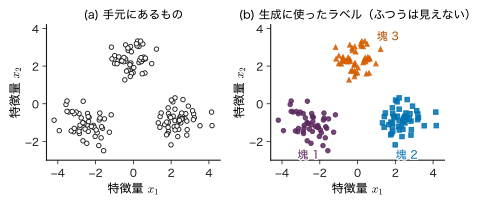
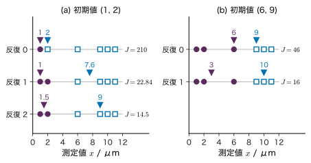
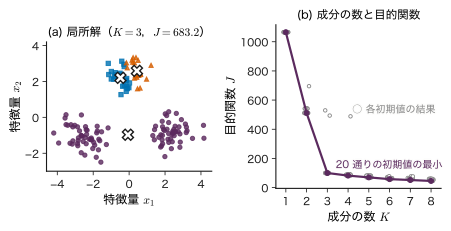
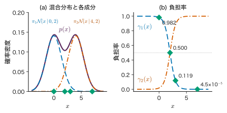
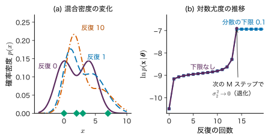
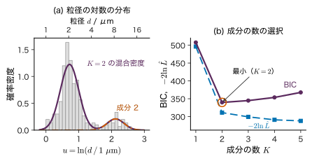
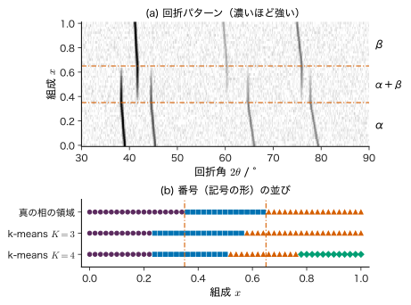

第17章クラスタリング・混合分布・EM 法 — 見えないラベルを推定する
- ラベル（正解）の付いていないデータを「似たもの同士」に分けるとき，計算機は実際には何を最小化・最大化しているのか．
- 組成を少しずつ変えた試料の X 線回折パターンを自動で分けたら，3 つのグループができた．この 3 つは 3 つの「相」だと言ってよいか．
- 見えないラベルと未知のパラメーターを同時に推定する EM 法は，なぜ反復のたびに尤度を下げずに済むのか．どんなときに破綻するのか．
これまでの章では，入力 $\bm{x}$ と正解 $y$ の組から学んだ．しかし材料の研究では，正解の付いていないデータの方がずっと多い．組成を連続的に変えた薄膜（組成傾斜試料）の上で 100 点の X 線回折パターンを測っても，各点がどの相かは誰も教えてくれない．走査電子顕微鏡で数百個の粒の大きさを測ると，分布の山が 2 つあるように見えるが，どの粒が「異常に成長した粒」かの札は付いていない．このようなデータに対して，「同じ仲間を集める」作業をクラスタリング（clustering）という．
本章では，まず最も単純な k-means（各点を最も近い代表点に割り当てる方法）を，最小化している量 $J$ から組み立てる．次に，データが「いくつかの Gauss 分布のどれかから生まれた」と考える Gauss 混合モデルを導入し，どの分布から生まれたかという見えないラベルを潜在変数として扱う．点ごとに「どの成分がどれだけ受け持つか」を表す負担率を Bayes の定理で求め，負担率とパラメーターを交互に更新する EM 法を対数尤度の微分から導く．4 点の手計算で 1 反復を追い，尤度が必ず増える理由を ELBO と KL ダイバージェンスへの分解で示す．後半では，初期値依存・共分散の退化・成分の番号の付け替えといった落とし穴，k-means が Gauss 混合の極限であること，成分の数の選び方を扱い，最後に回折パターンのクラスタリングで「クラスターは相か」という問いに戻る．
- k-means の目的関数 $J$ を書き，割り当てと平均の更新のどちらも $J$ を増やさないことを証明できる．1 次元の小さなデータで k-means を手で実行できる．
- Gauss 混合モデルを潜在変数 $\bm{z}$ による生成過程として説明し，周辺化で混合分布が得られることを示せる．
- 負担率 $\gamma_{nk}$ を Bayes の定理から導き，数値で計算できる．
- 対数尤度を微分して，$\bm{\mu}_k$，$\bm{\Sigma}_k$，$\pi_k$ の更新式を導出できる（$\pi_k$ は Lagrange の未定乗数法）．E ステップと M ステップを手計算で 1 回ずつ実行できる．
- 対数尤度の分解 $\ln p(\bm{X}\mid\bm{\theta})=\ELBO+\KL$ を導き，EM 法で対数尤度が減らない理由を説明できる．
- 初期値依存，共分散の退化（尤度の発散），成分の番号の付け替えを数値例で説明し，対処法を挙げられる．
- k-means が「等方的で分散が 0 に近づく Gauss 混合」の極限であることを示し，k-means の暗黙の仮定を言える．
- BIC で成分の数を選び，回折パターンのクラスタリングで「クラスター＝相」と言えない理由を説明できる．
入門ルートで読む節：この章は詳しいルートの章である．入門ルートでは 17.13（まとめ）だけを読めばよい．入門ルートで次に読むのは第22章である．
17.1 クラスタリングとは — 正解のない仕事詳しいルート
17.1.1 何をしたいのか
図17.1(a) は，2 つの特徴量 $x_1,x_2$ を測った 150 個の点である．見ただけで 3 つの塊があるように思える．実はこのデータは，3 つの Gauss 分布から 50 点ずつ引いて作った（同図(b)）．しかし実際のデータでは，(b) のラベルは手元に無い．手元にあるのは (a) だけである．

クラスタリングの目標は，(a) だけから (b) のような分け方を見つけることである．これは第1章 1.2 の五つの仕事のうち「潜在表現」に当たり，その中でも分け方が離散的なものである（連続的な低次元表現は次の第18章で扱う）．正解のラベルが無いので，第1章 1.3 の分類では教師なし学習に入る．
正解が無いということは，「どの分け方が正しいか」をデータだけからは決められないということである．何を「似ている」とみなすか，いくつに分けるか，塊がどんな形だと考えるかを，こちらが決めなければならない．本章の手法はどれも，その決め方を最小化（最大化）する量として書き表す．何を最適化しているかが分かれば，その手法が何を仮定し，どこで失敗するかも分かる．
17.1.2 「似ている」を距離で測る
最もよく使う「似ている」の尺度は，Euclid 距離 $\norm{\bm{x}-\bm{x}'}=\sqrt{\sum_{i=1}^{D}(x_i-x'_i)^{2}}$ である（$\bm{x},\bm{x}'\in\R^{D}$ は 2 つの点の特徴量のベクトル）．この距離は単純だが，特徴量の単位と尺度に強く依存する．単位の違う量（μm と HV など）をそのまま並べると，数値の大きい量だけで距離が決まってしまう．各特徴量からデータ全体の平均を引き，標準偏差で割る標準化は，この偏りをなくす最も簡単な方法である（第7章 7.3 でも，最適化を速くするために同じ操作をした）．ほかに，スペクトルのように全体の強さより形を比べたいときは，ベクトルの向きの近さ（コサイン類似度）を使う（17.11 節）．
例題17.1 標準化で「最も似た試料」が変わる
3 つの焼結体の平均粒径と Vickers 硬さを測った（教育用の数値例）．試料 A：$(2.0\ \mu\mathrm{m},\ 1600\ \mathrm{HV})$，試料 B：$(2.2\ \mu\mathrm{m},\ 1450\ \mathrm{HV})$，試料 C：$(5.0\ \mu\mathrm{m},\ 1590\ \mathrm{HV})$．(1) 単位をそのまま使った Euclid 距離で，A に近いのは B と C のどちらか．(2) 多数の試料から見積もった標準偏差（粒径 $1.5\ \mu\mathrm{m}$，硬さ $120\ \mathrm{HV}$）で各量を割ってから距離を測ると，どうなるか．
解答 (1) A と B の差は $(0.2,\,-150)$，A と C の差は $(3.0,\,-10)$ である（数値は単位を外したもの）．
$$ \begin{aligned} d_{\mathrm{AB}}&=\sqrt{0.2^{2}+150^{2}}=\sqrt{22500.04}\approx150.0,\\ d_{\mathrm{AC}}&=\sqrt{3.0^{2}+10^{2}}=\sqrt{109}\approx10.44 . \end{aligned} $$C の方が近い．しかしこれは硬さの数値が大きいからにすぎず，粒径が 2.5 倍も違うことはほとんど効いていない．
(2) 差を標準偏差で割ると，A–B は $(0.2/1.5,\,-150/120)=(0.133,\,-1.25)$，A–C は $(3.0/1.5,\,-10/120)=(2.0,\,-0.0833)$ になる．
今度は B の方が近い．「どちらが似ているか」は，データではなく尺度の決め方で決まった．標準化も一つの選択であり，粒径の違いを硬さの違いより重く見たいなら別の重みを使ってよい．大事なのは，その選択を意識して書き残すことである．
17.2 k-means — 最も近い平均に割り当てる詳しいルート
17.2.1 目的関数
データ $\bm{x}_1,\dots,\bm{x}_N\in\R^{D}$ を $K$ 個のグループ（クラスター）に分ける．クラスター $k$（$k=1,\dots,K$）の代表点を $\bm{\mu}_k\in\R^{D}$ とし，点 $n$ をどのクラスターに入れるかを 0 か 1 の数 $r_{nk}$ で表す．$r_{nk}=1$ なら点 $n$ はクラスター $k$ に属し，各 $n$ についてちょうど 1 つの $k$ で $r_{nk}=1$ である（$\sum_k r_{nk}=1$）．$r_{nk}$ を $n$ 行 $k$ 列に並べた $N\times K$ 行列の各行は，第9章で使った one-hot ベクトルである．
定義17.1 k-means の目的関数
割り当て $\{r_{nk}\}$ と代表点 $\{\bm{\mu}_k\}$ について
\begin{equation} \begin{aligned} J&=\sum_{n=1}^{N}\sum_{k=1}^{K}r_{nk}\\ &\qquad\times\norm{\bm{x}_n-\bm{\mu}_k}^{2} \end{aligned} \label{eq:17-J} \end{equation}を最小にする $\{r_{nk}\}$ と $\{\bm{\mu}_k\}$ を求める方法を k-means（k 平均法）という．$J$ は「各点から，自分の属するクラスターの代表点までの距離の 2 乗」の和である．$\bm{x}$ に単位があれば，$J$ の単位はその 2 乗である．
$r_{nk}$ と $\bm{\mu}_k$ を同時に最適化するのは難しい（$r_{nk}$ のとりうる組は $K^{N}$ 通りある）．そこで，片方を固定してもう片方を最適化することを交互に繰り返す．
- 割り当て（E ステップに当たる）：$\bm{\mu}_k$ を固定し，各点を最も近い代表点のクラスターに入れる． \begin{equation} r_{nk}=\begin{cases}1 & (k=k_n^{*})\\ 0 & (k\ne k_n^{*})\end{cases} \label{eq:17-assign} \end{equation} ここで $k_n^{*}=\argmin_{j}\norm{\bm{x}_n-\bm{\mu}_j}^{2}$ は点 $n$ に最も近い代表点の番号である．
- 平均の更新（M ステップに当たる）：$r_{nk}$ を固定し，各代表点をそのクラスターの点の平均にする． \begin{equation} \bm{\mu}_k=\frac{\sum_{n}r_{nk}\bm{x}_n}{\sum_{n}r_{nk}} \label{eq:17-kmean} \end{equation}
- 割り当てが変わらなくなったら止める．
この手順は Lloyd (1982) が信号の量子化の文脈で示した方法と同じで，Lloyd の算法とも呼ばれる．名前の E・M は 17.5 節の EM 法の 2 つのステップに対応する（17.9 節で，その対応が比喩ではなく極限として成り立つことを示す）．
17.2.2 どちらのステップも $J$ を増やさない
定理17.1 k-means の単調性
割り当て \eqref{eq:17-assign} と平均の更新 \eqref{eq:17-kmean} のどちらを行っても，$J$ は増えない．したがって k-means は有限回の反復で止まる．
証明
割り当て．$\bm{\mu}_k$ を固定すると，$J$ は点ごとの項の和 $J=\sum_n J_n$，$J_n=\sum_k r_{nk}\norm{\bm{x}_n-\bm{\mu}_k}^{2}$ に分かれる．$J_n$ は点 $n$ の割り当てだけで決まり，$r_{nk}$ のうち 1 になるのは 1 つだけなので，$J_n$ は「選んだクラスターの代表点までの距離の 2 乗」に等しい．これを最も小さくするのは最も近い代表点を選ぶことであり，それが \eqref{eq:17-assign} である．各 $J_n$ が以前の値以下になるので，和 $J$ も以前の値以下になる．
平均の更新．割り当てを固定すると，$J$ はクラスターごとの和 $J=\sum_k\sum_{n\in C_k}\norm{\bm{x}_n-\bm{\mu}_k}^{2}$ に分かれる．$C_k$ はクラスター $k$ に入った点の添字の集合，$N_k=\sum_n r_{nk}$ はその個数，$\bar{\bm{x}}_k=\frac{1}{N_k}\sum_{n\in C_k}\bm{x}_n$ はその平均である（$N_k\ge1$ とする）．各点で $\bm{x}_n-\bm{\mu}_k=(\bm{x}_n-\bar{\bm{x}}_k)+(\bar{\bm{x}}_k-\bm{\mu}_k)$ と分けて 2 乗を展開すると，
$$ \begin{aligned} &\sum_{n\in C_k}\norm{\bm{x}_n-\bm{\mu}_k}^{2}\\ &=\sum_{n\in C_k}\norm{\bm{x}_n-\bar{\bm{x}}_k}^{2}\\ &\quad+2(\bar{\bm{x}}_k-\bm{\mu}_k)^{\tp}\!\!\sum_{n\in C_k}\!(\bm{x}_n-\bar{\bm{x}}_k)\\ &\quad+N_k\norm{\bar{\bm{x}}_k-\bm{\mu}_k}^{2}. \end{aligned} $$2 行目の和は $\sum_{n\in C_k}\bm{x}_n-N_k\bar{\bm{x}}_k=\bm{0}$ なので消える．1 行目は $\bm{\mu}_k$ によらず，3 行目は 0 以上で，$\bm{\mu}_k=\bar{\bm{x}}_k$ のときだけ 0 になる．したがって $\bm{\mu}_k=\bar{\bm{x}}_k$，すなわち \eqref{eq:17-kmean} がこのクラスターの項を最小にする．どのクラスターの項も以前の値以下になるので，$J$ は増えない．
有限回で止まること．割り当ての組は高々 $K^{N}$ 通りで有限である．同点のときの選び方を固定しておけば，割り当てが変わる反復では $J$ は真に減るので，同じ割り当てに戻ることはない．したがって有限回の反復で割り当てが変わらなくなる．
（証明終わり）
この証明が保証するのは「$J$ が下がり続けて止まる」ことだけである．止まった所が $J$ の最小値（大域的な最適解）である保証はない．止まった所は，「割り当てを変えても平均を動かしても $J$ が下がらない点」，つまり局所的な最適解である．
17.2.3 1 次元の 6 点で手計算する
例題17.2 k-means を手で 2 反復する
6 個の粒の径を測り，$x=1,\ 2,\ 6,\ 9,\ 10,\ 11\ \mu\mathrm{m}$ を得た（教育用の数値例）．$K=2$，初期の代表点を $\mu_1=1$，$\mu_2=2$（単位 μm．以下省略）として k-means を実行し，各段階の $J$ を求めよ．
解答 反復 0 の割り当て：各点と $\mu_1=1$，$\mu_2=2$ の距離を比べる．$x=1$ だけが $\mu_1$ に近く（距離 0 と 1），$x=2$ 以降はすべて $\mu_2$ に近い．クラスター 1 は $\{1\}$，クラスター 2 は $\{2,6,9,10,11\}$ で，
$$ \begin{aligned} J&=0^{2}+\bigl(0^{2}+4^{2}+7^{2}+8^{2}+9^{2}\bigr)\\ &=0+(0+16+49+64+81)=210 . \end{aligned} $$平均の更新：$\mu_1=1$，$\mu_2=(2+6+9+10+11)/5=38/5=7.6$．このとき
$$ \begin{aligned} J&=0+(5.6^{2}+1.6^{2}+1.4^{2}+2.4^{2}+3.4^{2})\\ &=31.36+2.56+1.96+5.76+11.56\\ &=53.2 \end{aligned} $$で，210 から下がった．
反復 1 の割り当て：$x=2$ は $\mu_1=1$ まで 1，$\mu_2=7.6$ まで 5.6 なのでクラスター 1 に移る．$x=6$ は 5 と 1.6 でクラスター 2 のまま．クラスター 1 は $\{1,2\}$，クラスター 2 は $\{6,9,10,11\}$ で，$J=(0+1)$ $+(1.6^{2}+1.4^{2}+2.4^{2}+3.4^{2})$ $=1+21.84=22.84$．
平均の更新：$\mu_1=(1+2)/2=1.5$，$\mu_2=(6+9+10+11)/4=36/4=9$．$J=(0.5^{2}+0.5^{2})$ $+(3^{2}+0^{2}+1^{2}+2^{2})$ $=0.5+14=14.5$．
反復 2 の割り当て：$x=6$ は $\mu_1=1.5$ まで 4.5，$\mu_2=9$ まで 3 なのでクラスター 2 のまま．ほかの点も変わらない．割り当てが変わらないので止まる．最終結果は $\{1,2\}$ と $\{6,9,10,11\}$，$\mu=(1.5,\,9)$，$J=14.5\ \mu\mathrm{m}^{2}$ である．$J$ は $210\to53.2\to22.84\to14.5$ と単調に下がった（定理17.1）．

17.2.4 初期値依存
同じデータでも，初期値を変えると別の答えに止まることがある（図17.2(b)）．
例題17.3 別の初期値から始める
例題17.2 のデータで，初期の代表点を $\mu_1=6$，$\mu_2=9$ にすると，k-means はどこで止まるか．得られた $J$ を例題17.2 と比べ，どちらが $J$ の最小値かを調べよ．
解答 割り当て：$x=1,2,6$ は 6 の方が近く，$x=9,10,11$ は 9 の方が近い（$x=6$ は 6 まで 0，9 まで 3）．$J=(5^{2}+4^{2}+0^{2})$ $+(0^{2}+1^{2}+2^{2})$ $=41+5=46$．更新：$\mu_1=(1+2+6)/3=3$，$\mu_2=(9+10+11)/3=10$．割り当て：$x=6$ は 3 まで 3，10 まで 4 なのでクラスター 1 のまま．何も変わらないので止まる．$J=(2^{2}+1^{2}+3^{2})$ $+(1^{2}+0^{2}+1^{2})$ $=14+2=16$．
1 次元で $K=2$ なら，最適な分け方は「小さい方から $s$ 個と残り」のどれかである（間に別のクラスターの点を挟む分け方は，入れ替えると必ず $J$ が下がる）．$s=1,\dots,5$ の 5 通りの $J$（それぞれのクラスターの平均のまわりの 2 乗和の合計）を計算すると，$s=1$：$0+53.2=53.2$，$s=2$：$0.5+14=14.5$，$s=3$：$14+2=16$，$s=4$：平均 4.5 のまわりで $41$，平均 10.5 のまわりで $0.5$，合計 $41.5$，$s=5$：平均 5.6 のまわりで $65.2$，合計 $65.2$ である．最小は $s=2$ の $J=14.5$ で，例題17.2 の答えが大域的な最適解，$J=16$ の答えは局所的な最適解である．$J=16$ の状態では，$x=6$ をクラスター 2 に移しても，平均を少し動かしても $J$ は下がらない．2 つのステップを交互に行うだけでは，この状態から抜け出せない．
実務では，次のような対処をとる．
- 初期値を変えて何度も実行し，$J$ が最も小さい結果を採る．初期値の選び方の決め方（乱数の seed）も記録する．
- k-means++（Arthur & Vassilvitskii 2007）：1 つ目の代表点をデータから無作為に選び，2 つ目以降は「既に選んだ代表点からの距離の 2 乗」に比例する確率でデータ点を選ぶ．互いに離れた初期値になりやすく，得られる $J$ の期待値が最適値の $O(\ln K)$ 倍以内に収まることが示されている．
17.2.5 $K$ をどう選ぶか
$K$ を増やすと $J$ の最小値は下がり続け，$K=N$（各点が自分だけのクラスター）で 0 になる（演習17.7）．したがって「$J$ が最小になる $K$」を選ぶことはできない．よく使われる目安は，$K$ を 1 つ増やしたときの $J$ の下がり方が急に小さくなる所（「肘」）を選ぶ方法である．図17.3(b) では，$J$ の最小値が $K=1,2,3$ で $1065.4,\ 511.4,\ 100.1$ と大きく下がり，$K=4,5$ では $82.2,\ 70.1$ とゆっくりになる．肘は $K=3$ である．ただし肘がはっきりしないデータも多い．確率モデルを使えば，17.10 節の BIC のようにもう少し根拠のある選び方ができる．

17.3 Gauss 混合モデル — 見えないラベルを持つ生成過程詳しいルート
17.3.1 k-means の限界から確率モデルへ
k-means は便利だが，次の 2 点で物足りない．第一に，各点をどれか 1 つのクラスターに必ず入れる．2 つの塊の境目にある点も，どちらかに言い切ってしまう．第二に，距離 $\norm{\bm{x}-\bm{\mu}_k}$ はどの向きにも同じ重みなので，細長い塊や大きさの違う塊をうまく表せない（17.9 節で理由を示す）．
そこで，データがどのように生まれたかを確率モデルとして書き，そのモデルの側から「この点はどの塊の出身らしいか」を確率で答えることにする．最も基本的なモデルが Gauss 混合モデル（Gaussian mixture model，GMM）である．
17.3.2 潜在変数を使った生成過程
各データ点 $\bm{x}_n\in\R^{D}$ に，それがどの成分から生まれたかを表す変数 $\bm{z}_n\in\{0,1\}^{K}$ を付ける．$\bm{z}_n$ は one-hot ベクトルで，成分 $k$ から生まれたなら第 $k$ 成分 $z_{nk}$ だけが 1 である．$\bm{z}_n$ は観測できないので潜在変数（latent variable）と呼ぶ．
記号：本章の $\bm{z}$ と $\pi$
第14・15章では $\bm{z}^{(l)}$ をニューラルネットワークの隠れ層の出力に使ったが，本章の $\bm{z}_n$ は潜在変数（どの成分から生まれたかを表す one-hot ベクトル）である．また $\pi_k$ は混合係数で，円周率 $\pi$（$\ln 2\pi$ などに現れる）とは別物である．円周率は添字を付けずに書く．
生成の手順は次のとおりである（図17.4）．
- 成分の番号を，確率 $\pi_1,\dots,\pi_K$ で選ぶ：$p(z_{nk}=1)=\pi_k$．$\pi_k$ を混合係数（mixing coefficient）といい，$0\le\pi_k\le1$，$\sum_{k=1}^{K}\pi_k=1$ を満たす．これは第3章 3.3 のカテゴリカル分布である．
- 選んだ成分 $k$ の Gauss 分布から点を引く：$p(\bm{x}_n\mid z_{nk}=1)=\Normal(\bm{x}_n\mid\bm{\mu}_k,\bm{\Sigma}_k)$．$\bm{\mu}_k\in\R^{D}$ は成分 $k$ の平均，$\bm{\Sigma}_k\in\R^{D\times D}$ はその共分散行列（対称・正定値）である．
この 2 段の手順を式にする．$\bm{z}_n$ の分布と，$\bm{z}_n$ を与えたときの $\bm{x}_n$ の分布は，one-hot であることを使って指数の形でまとめて書ける．
$$ p(\bm{z}_n)=\prod_{k=1}^{K}\pi_k^{z_{nk}}, $$ $$ p(\bm{x}_n\mid\bm{z}_n)=\prod_{k=1}^{K}\Normal(\bm{x}_n\mid\bm{\mu}_k,\bm{\Sigma}_k)^{z_{nk}} $$（$z_{nk}=1$ の $k$ の因子だけが残り，ほかは 0 乗で 1 になる．）乗法定理（第2章 2.2）から同時分布は
\begin{equation} \begin{aligned} &p(\bm{x}_n,\bm{z}_n)\\ &=p(\bm{z}_n)\,p(\bm{x}_n\mid\bm{z}_n)\\ &=\prod_{k=1}^{K}\bigl[\pi_k\,\Normal(\bm{x}_n\mid\bm{\mu}_k,\bm{\Sigma}_k)\bigr]^{z_{nk}} \end{aligned} \label{eq:17-joint} \end{equation}である．$\bm{x}_n$ だけの分布は，加法定理で $\bm{z}_n$ について和をとる（周辺化する）．$\bm{z}_n$ のとりうる値は「第 $k$ 成分だけが 1」の $K$ 通りなので，
定義17.2 Gauss 混合モデル
$\bm{z}$ を周辺化した $\bm{x}$ の分布 $p(\bm{x})=\sum_{k}\pi_k\,\Normal(\bm{x}\mid\bm{\mu}_k,\bm{\Sigma}_k)$（下の式 \eqref{eq:17-gmm}）を Gauss 混合モデル（混合分布）という．パラメーターは $\bm{\theta}=\{\pi_k,\bm{\mu}_k,\bm{\Sigma}_k\}_{k=1}^{K}$ である．各 $\Normal(\bm{x}\mid\bm{\mu}_k,\bm{\Sigma}_k)$ を成分（component）という．
右辺の各項は正で，積分すると $\sum_k\pi_k\times1=1$ になるので，\eqref{eq:17-gmm} はたしかに確率密度である．成分を十分たくさん使えば，滑らかな密度の多くを Gauss 混合でいくらでもよく近似できる．つまり Gauss 混合は「塊に分ける」道具であると同時に，形の決まっていない密度を推定する道具でもある（第1章の五つの仕事の「密度推定」）．同じモデルのグラフ表現（プレート表記）は第19章 19.4 にある．
例題17.4 1 次元の混合密度の値
1 次元（$D=1$）で，$K=2$，$\pi_1=\pi_2=\tfrac12$，$\mu_1=0$，$\mu_2=4$，$\sigma_1^{2}=\sigma_2^{2}=2$ の Gauss 混合を考える（17.4〜17.8 節で使い続ける設定）．(1) $x=0$ と $x=2$ での密度 $p(x)$ を求めよ．(2) この分布から 1 点を引くとき，それが成分 2 から来る確率と，成分 2 から来たと分かっているときに $x\gt4$ となる確率を求めよ．
解答 1 次元の Gauss 分布は $\Normal(x\mid\mu,\sigma^{2})=\dfrac{1}{\sqrt{2\pi\sigma^{2}}}\exp\!\left[-\dfrac{(x-\mu)^{2}}{2\sigma^{2}}\right]$ で，$\sigma^{2}=2$ なら前の係数は $1/\sqrt{4\pi}=0.28209$，指数は $-(x-\mu)^{2}/4$ である．
(1) $x=0$：$\Normal(0\mid0,2)=0.28209$，$\Normal(0\mid4,2)=0.28209\,e^{-4}=0.0051667$．
$x=2$：どちらの成分の平均からも距離 2 なので，$\Normal(2\mid0,2)=\Normal(2\mid4,2)$ $=0.28209\,e^{-1}=0.10378$．$p(2)=\tfrac12(0.10378+0.10378)=0.10378$．
(2) 成分 2 から来る確率は $\pi_2=\tfrac12$（点を見る前の確率）．成分 2 の分布は $x=4$ について対称なので，$P(x\gt4\mid z_2=1)=\tfrac12$ である．点を見た後で成分の確率がどう変わるかが，次節の負担率である．
17.4 負担率 — どの成分が点を受け持つか詳しいルート
点 $\bm{x}$ を観測したとき，それが成分 $k$ から生まれた確率 $p(z_k=1\mid\bm{x})$ を考える．事前の確率は $p(z_k=1)=\pi_k$，成分 $k$ のもとでの $\bm{x}$ の密度は $\Normal(\bm{x}\mid\bm{\mu}_k,\bm{\Sigma}_k)$ だから，Bayes の定理（第2章 2.4）がそのまま使える．
定義17.3 負担率
パラメーター $\bm{\theta}$ を与えたとき，点 $\bm{x}_n$ が成分 $k$ から生まれた事後確率 $\gamma_{nk}\equiv p(z_{nk}=1\mid\bm{x}_n,\bm{\theta})$（下の式 \eqref{eq:17-resp}）を，成分 $k$ の点 $n$ に対する負担率（responsibility）という．各 $n$ について $0\le\gamma_{nk}\le1$，$\sum_k\gamma_{nk}=1$ である．
導出は 1 行である：分子は乗法定理による同時確率 $p(z_{nk}=1,\bm{x}_n)=p(z_{nk}=1)\,p(\bm{x}_n\mid z_{nk}=1)$，分母はそれを $k$ について足した周辺確率 $p(\bm{x}_n)$（式 \eqref{eq:17-gmm}）である．負担率は，k-means の 0 か 1 の割り当て $r_{nk}$ を，0 と 1 の間の値に広げたもの（「やわらかい割り当て」）と見ることができる．
ラベルが見えているとき，同じ式はクラスごとの分布から事後確率を求める生成的分類（第9章 9.2）そのものだった．Gauss 混合の負担率は，ラベルが見えないまま，同じ計算を「いまのパラメーターの推定値」で行ったものである．
例題17.5 4 点の負担率
例題17.4 の設定（$\pi_1=\pi_2=\tfrac12$，$\mu_1=0$，$\mu_2=4$，$\sigma_1^{2}=\sigma_2^{2}=2$）で，4 点 $x=0,\ 2,\ 3,\ 7$ の負担率 $\gamma_{n1}$ を求めよ．負担率が $x$ のどんな関数になっているかも調べよ．
解答 $\pi_1=\pi_2$，$\sigma_1=\sigma_2$ なので，式 \eqref{eq:17-resp} の分子・分母で $\pi_k$ と前の係数 $1/\sqrt{4\pi}$ が約分され，指数だけが残る．分子と分母を $\exp[-x^{2}/4]$ で割ると，
$$ \begin{aligned} \gamma_{1}(x)&=\frac{e^{-x^{2}/4}}{e^{-x^{2}/4}+e^{-(x-4)^{2}/4}}\\ &=\frac{1}{1+e^{\,[x^{2}-(x-4)^{2}]/4}}\\ &=\frac{1}{1+e^{\,2x-4}} . \end{aligned} $$（$x^{2}-(x-4)^{2}=8x-16$ を使った．）これはロジスティック sigmoid 関数 $\sigma(a)=1/(1+e^{-a})$ に $a=4-2x$ を入れたもの，$\gamma_1(x)=\sigma(4-2x)$ である．4 点では
| $x_n$ | $a=4-2x_n$ | $\gamma_{n1}=1/(1+e^{-a})$ | $\gamma_{n2}=1-\gamma_{n1}$ |
|---|---|---|---|
| 0 | 4 | 0.98201 | 0.01799 |
| 2 | 0 | 0.50000 | 0.50000 |
| 3 | −2 | 0.11920 | 0.88080 |
| 7 | −10 | 0.0000454 | 0.9999546 |
となる．2 つの平均のちょうど中間 $x=2$ では五分五分，平均 4 の側の $x=3$ でも成分 1 の負担率は 0 ではなく 0.119 残る．分散が等しく混合係数も等しいので，境目は 2 つの平均の中点で，負担率は $x$ の 1 次関数の sigmoid になる．分散が成分ごとに違うと，指数の $x^{2}$ の項が消えずに残り，負担率は 2 次関数の sigmoid になる（演習17.4）．

数学の道具：負担率は log-sum-exp で計算する
次元 $D$ が大きいと，$\Normal(\bm{x}_n\mid\bm{\mu}_k,\bm{\Sigma}_k)$ は $10^{-300}$ より小さくなって 0 に丸まることがある．そこで $\ell_{nk}=\ln\pi_k+\ln\Normal(\bm{x}_n\mid\bm{\mu}_k,\bm{\Sigma}_k)$ を計算し，$m_n=\max_k\ell_{nk}$ として
$$ \ln\sum_{j}e^{\ell_{nj}}=m_n+\ln\sum_{j}e^{\ell_{nj}-m_n}, $$ $$ \gamma_{nk}=\exp\Bigl(\ell_{nk}-\ln\sum_{j}e^{\ell_{nj}}\Bigr) $$と計算する（log-sum-exp．第9章 9.5 の softmax と同じ工夫）．$\ln\Normal$ に必要な $\ln\abs{\bm{\Sigma}_k}$ と $(\bm{x}-\bm{\mu}_k)^{\tp}\bm{\Sigma}_k^{-1}(\bm{x}-\bm{\mu}_k)$ は，$\bm{\Sigma}_k$ の Cholesky 分解 $\bm{\Sigma}_k=\bm{L}\bm{L}^{\tp}$ から，$\ln\abs{\bm{\Sigma}_k}=2\sum_i\ln L_{ii}$ と，$\bm{L}\bm{v}=\bm{x}-\bm{\mu}_k$ を解いた $\norm{\bm{v}}^{2}$ で求める（逆行列は作らない）．
17.5 EM 法 — 負担率とパラメーターを交互に更新する詳しいルート
17.5.1 対数尤度
データ $\bm{X}=\{\bm{x}_1,\dots,\bm{x}_N\}$（$N\times D$ の行列と見てもよい）が独立に Gauss 混合 \eqref{eq:17-gmm} から生まれたとすると，対数尤度は
\begin{equation} \begin{aligned} &\ln p(\bm{X}\mid\bm{\theta})\\ &\ =\sum_{n=1}^{N}\ln\biggl[\sum_{k=1}^{K}\pi_k\\ &\qquad\quad\times\Normal(\bm{x}_n\mid\bm{\mu}_k,\bm{\Sigma}_k)\biggr] \end{aligned} \label{eq:17-loglik} \end{equation}である．これを $\bm{\theta}$ について最大にしたい（最尤推定．第4章 4.2）．1 つの Gauss 分布なら，$\ln$ が $\exp$ を打ち消して 2 次式になり，平均と分散が閉じた形で求まった．混合では $\ln$ の中に和があるので，そうはいかない．それでも，微分して 0 と置いた式を書き下すことはでき，その形から計算法が見えてくる．
17.5.2 平均の更新式
導出：$\bm{\mu}_k$ の停留条件
式 \eqref{eq:17-loglik} を $\bm{\mu}_k$ で微分する．$\bm{\mu}_k$ を含むのは，各 $n$ の $\ln[\cdots]$ の中の第 $k$ 項だけである．合成関数の微分と，$\partial f/\partial\bm{\mu}=f\,\partial\ln f/\partial\bm{\mu}$（$f\gt0$）を使うと，
$$ \begin{aligned} &\pdiff{\ln p(\bm{X}\mid\bm{\theta})}{\bm{\mu}_k}\\ &=\sum_{n=1}^{N}\frac{\pi_k\,\pdiff{}{\bm{\mu}_k}\Normal(\bm{x}_n\mid\bm{\mu}_k,\bm{\Sigma}_k)}{\sum_{j}\pi_j\,\Normal(\bm{x}_n\mid\bm{\mu}_j,\bm{\Sigma}_j)}\\ &=\sum_{n=1}^{N}\underbrace{\frac{\pi_k\,\Normal(\bm{x}_n\mid\bm{\mu}_k,\bm{\Sigma}_k)}{\sum_{j}\pi_j\,\Normal(\bm{x}_n\mid\bm{\mu}_j,\bm{\Sigma}_j)}}_{\gamma_{nk}}\\ &\qquad\times\pdiff{\ln\Normal(\bm{x}_n\mid\bm{\mu}_k,\bm{\Sigma}_k)}{\bm{\mu}_k}. \end{aligned} $$ここで負担率 \eqref{eq:17-resp} が自然に現れた．多変量 Gauss 分布の対数（第3章 3.6）は
$$ \begin{aligned} \ln\Normal(\bm{x}\mid\bm{\mu},\bm{\Sigma})&=-\frac{D}{2}\ln2\pi-\frac12\ln\abs{\bm{\Sigma}}\\ &\quad-\frac12(\bm{x}-\bm{\mu})^{\tp}\bm{\Sigma}^{-1}(\bm{x}-\bm{\mu}) \end{aligned} $$である．対称行列 $\bm{A}$ について $\pdiff{}{\bm{\mu}}\bigl[(\bm{x}-\bm{\mu})^{\tp}\bm{A}(\bm{x}-\bm{\mu})\bigr]=-2\bm{A}(\bm{x}-\bm{\mu})$（成分で書くと $\sum_{ij}(x_i-\mu_i)A_{ij}(x_j-\mu_j)$ を $\mu_l$ で微分して $-2\sum_jA_{lj}(x_j-\mu_j)$）なので，$\pdiff{\ln\Normal}{\bm{\mu}}=\bm{\Sigma}^{-1}(\bm{x}-\bm{\mu})$．よって停留条件は
$$ \sum_{n=1}^{N}\gamma_{nk}\,\bm{\Sigma}_k^{-1}(\bm{x}_n-\bm{\mu}_k)=\bm{0}. $$左から $\bm{\Sigma}_k$ を掛け，$\sum_n\gamma_{nk}\bm{x}_n=\bigl(\sum_n\gamma_{nk}\bigr)\bm{\mu}_k$ を $\bm{\mu}_k$ について解く．
（導出終わり）
成分 $k$ が受け持つ点の「実効的な個数」を
\begin{equation} N_k\equiv\sum_{n=1}^{N}\gamma_{nk} \label{eq:17-Nk} \end{equation}と書くと（$\sum_kN_k=N$），結果は
\begin{equation} \bm{\mu}_k=\frac{1}{N_k}\sum_{n=1}^{N}\gamma_{nk}\,\bm{x}_n \label{eq:17-mu} \end{equation}である．負担率を重みとする重み付き平均であり，$\gamma_{nk}$ を 0 か 1 の $r_{nk}$ に置き換えると k-means の \eqref{eq:17-kmean} になる．
17.5.3 共分散行列の更新式
$\bm{\Sigma}_k$ での微分には，行列の微分の公式が 2 つ要る．計算を簡単にするため，共分散行列の逆行列（精度行列）$\bm{\Lambda}_k\equiv\bm{\Sigma}_k^{-1}$ で微分する（第7章の Lagrange 関数 $\Lambda$ とは別の記号で，太字で添字が付く）．$\bm{\Lambda}_k$ の停留点は $\bm{\Sigma}_k$ の停留点でもある．
数学の道具：行列式の対数と跡の微分
正則な $D\times D$ 行列 $\bm{A}$ と定数行列 $\bm{B}$ について，成分 $A_{ij}$ での微分を $(i,j)$ 成分に並べた行列を $\pdiff{}{\bm{A}}$ と書く．
$$ \pdiff{\ln\abs{\bm{A}}}{\bm{A}}=(\bm{A}^{-1})^{\tp},\qquad \pdiff{\tr(\bm{A}\bm{B})}{\bm{A}}=\bm{B}^{\tp}. $$1 つ目：第 $i$ 行での余因子展開（大学数学 第8章 8.4）$\abs{\bm{A}}=\sum_{j}A_{ij}C_{ij}$（$C_{ij}$ は余因子で，第 $i$ 行の成分を含まない）から $\partial\abs{\bm{A}}/\partial A_{ij}=C_{ij}$．余因子行列による逆行列の公式（大学数学 第9章 9.1）$(\bm{A}^{-1})_{ji}=C_{ij}/\abs{\bm{A}}$ を使うと $\partial\ln\abs{\bm{A}}/\partial A_{ij}=C_{ij}/\abs{\bm{A}}=(\bm{A}^{-1})_{ji}$．2 つ目：$\tr(\bm{A}\bm{B})=\sum_{i}\sum_{j}A_{ij}B_{ji}$ を $A_{ij}$ で微分すると $B_{ji}$．対称行列の成分は独立ではない（$A_{ij}=A_{ji}$）が，独立とみなして求めた停留点は対称になり，対称性を考えた場合と同じ点になる．
導出：$\bm{\Sigma}_k$ の停留条件
スカラー $a$ は $a=\tr(a)$ と書けることと $\tr(\bm{u}^{\tp}\bm{A}\bm{u})=\tr(\bm{A}\bm{u}\bm{u}^{\tp})$ を使い，$\abs{\bm{\Sigma}^{-1}}=1/\abs{\bm{\Sigma}}$ に注意して，Gauss 分布の対数を $\bm{\Lambda}=\bm{\Sigma}^{-1}$ で書き直す．$\bm{d}_{nk}\equiv\bm{x}_n-\bm{\mu}_k$ とおく．
$$ \begin{aligned} &\ln\Normal(\bm{x}_n\mid\bm{\mu}_k,\bm{\Lambda}_k^{-1})\\ &=-\frac{D}{2}\ln2\pi+\frac12\ln\abs{\bm{\Lambda}_k}-\frac12\tr\bigl(\bm{\Lambda}_k\,\bm{d}_{nk}\bm{d}_{nk}^{\tp}\bigr). \end{aligned} $$17.5.2 項と同じく $\pdiff{\ln p(\bm{X}\mid\bm{\theta})}{\bm{\Lambda}_k}=\sum_n\gamma_{nk}\pdiff{\ln\Normal(\bm{x}_n\mid\bm{\mu}_k,\bm{\Lambda}_k^{-1})}{\bm{\Lambda}_k}$ である．上の 2 つの公式（$\bm{\Lambda}_k$ と $\bm{d}\bm{d}^{\tp}$ は対称）から
$$ \begin{aligned} \pdiff{\ln\Normal(\bm{x}_n\mid\bm{\mu}_k,\bm{\Lambda}_k^{-1})}{\bm{\Lambda}_k}&=\frac12\bm{\Lambda}_k^{-1}-\frac12\bm{d}_{nk}\bm{d}_{nk}^{\tp}\\ &=\frac12\bm{\Sigma}_k-\frac12\bm{d}_{nk}\bm{d}_{nk}^{\tp}. \end{aligned} $$停留条件は $\sum_n\gamma_{nk}\bigl(\bm{\Sigma}_k-\bm{d}_{nk}\bm{d}_{nk}^{\tp}\bigr)=\bm{O}$，すなわち $N_k\bm{\Sigma}_k=\sum_n\gamma_{nk}\bm{d}_{nk}\bm{d}_{nk}^{\tp}$ である．
（導出終わり）
これは負担率で重みを付けた共分散行列（$1/N_k$ で割る最尤推定の形）である．ここでの $\bm{\mu}_k$ は \eqref{eq:17-mu} で求めた値を使う．1 次元なら $\sigma_k^{2}=\frac{1}{N_k}\sum_n\gamma_{nk}(x_n-\mu_k)^{2}$ である．
17.5.4 混合係数の更新式
$\pi_k$ には $\sum_k\pi_k=1$ という等式制約がある．第7章 7.7 の Lagrange の未定乗数法を使い，乗数を $\nu$ として
$$ \Lambda(\bm{\pi},\nu)=\ln p(\bm{X}\mid\bm{\theta})+\nu\Bigl(\sum_{k=1}^{K}\pi_k-1\Bigr) $$の停留点を求める（この $\Lambda$ は第7章と同じ Lagrange 関数である）．
導出：$\pi_k$ の停留条件
$\pi_k$ で微分する．$\ln p$ の中で $\pi_k$ を含むのは各 $n$ の和の第 $k$ 項だけなので，
$$ \pdiff{\Lambda}{\pi_k}=\sum_{n=1}^{N}\frac{\Normal(\bm{x}_n\mid\bm{\mu}_k,\bm{\Sigma}_k)}{\sum_{j}\pi_j\,\Normal(\bm{x}_n\mid\bm{\mu}_j,\bm{\Sigma}_j)}+\nu=0 . $$両辺に $\pi_k$ を掛けると，和の各項が負担率 $\gamma_{nk}$ になる．
$$ \sum_{n=1}^{N}\gamma_{nk}+\nu\,\pi_k=0\quad\Longrightarrow\quad N_k=-\nu\,\pi_k . $$これを $k=1,\dots,K$ について足すと，左辺は $\sum_kN_k=\sum_n\sum_k\gamma_{nk}=N$，右辺は $-\nu\sum_k\pi_k=-\nu$ なので $\nu=-N$．元の式に戻して $\pi_k=N_k/N$ を得る．
（導出終わり）
$N_k\ge0$ なので $\pi_k\ge0$ も自動的に満たされる．「成分 $k$ が受け持つ点の割合」という自然な結果である．
17.5.5 閉じた形ではない — だから交互に解く
\eqref{eq:17-mu}〜\eqref{eq:17-pi} は解の公式のように見えるが，右辺の $\gamma_{nk}$ が \eqref{eq:17-resp} を通して $\bm{\theta}$ 自身に依存している．つまりこれらは $\bm{\theta}$ についての連立方程式であって，解そのものではない．そこで，k-means と同じく「片方を固定してもう片方を求める」ことを繰り返す．これを EM 法（expectation–maximization algorithm．期待値最大化法）という．名前は Dempster, Laird & Rubin (1977) による．
定理17.2 Gauss 混合の EM 法
- 初期化：$\pi_k$，$\bm{\mu}_k$，$\bm{\Sigma}_k$ に初期値を与え，対数尤度 \eqref{eq:17-loglik} を計算する．
- E ステップ（expectation）：いまのパラメーターで負担率 $\gamma_{nk}$ を \eqref{eq:17-resp} から計算する．
- M ステップ（maximization）：$\gamma_{nk}$ を固定して，$N_k$ \eqref{eq:17-Nk}，$\bm{\mu}_k$ \eqref{eq:17-mu}，$\bm{\Sigma}_k$ \eqref{eq:17-sigma}（新しい $\bm{\mu}_k$ を使う），$\pi_k$ \eqref{eq:17-pi} を計算する．
- 対数尤度を計算し，増え方が十分小さければ止める．そうでなければ 2 へ戻る．
このとき対数尤度 \eqref{eq:17-loglik} は反復のたびに減らない（証明は 17.7 節）．
例題17.6 成分が 1 つのときの EM 法
$K=1$ の Gauss 混合（ふつうの Gauss 分布）に EM 法を使うと，初期値によらず 1 回の反復で何が得られるか．1 次元の 4 点 $x=0,2,3,7$ で値を求めよ．
解答 $K=1$ では式 \eqref{eq:17-resp} の分子と分母が同じなので，初期値によらず $\gamma_{n1}=1$ である．したがって $N_1=N$，$\pi_1=1$，$\mu_1=\frac1N\sum_nx_n$（標本平均），$\sigma_1^{2}=\frac1N\sum_n(x_n-\mu_1)^{2}$（$1/N$ で割る標本分散）で，1 回の M ステップで Gauss 分布の最尤推定値（第4章 4.2）に到達する．4 点では $\mu_1=(0+2+3+7)/4=3$，$\sigma_1^{2}=(9+1+0+16)/4=26/4=6.5$．2 回目以降は何も変わらない．EM 法は，1 つの Gauss 分布の最尤推定を「負担率で重みを付けて成分ごとに行う」ことの繰り返しだと分かる．
17.5.6 シミュレーターで 2 次元の EM 法を 1 ステップずつ進める
次のシミュレーターは，2 次元のデータに Gauss 混合の EM 法と k-means を 1 ステップずつ適用し，負担率・平均・共分散・対数尤度の値を表示する．装置の初期値は「データ点から無作為に選んだ $K$ 個を平均に，共分散行列はどの成分もデータ全体の分散の平均を対角に並べた $(\tr\bm{S}/2)\bm{I}$，混合係数は $1/K$」である（$\bm{S}$ はデータ全体の共分散行列）．装置は 2 次元のデータだけを扱い，k-means++ などの初期値の工夫はしていない（本文の 17.6 節は 1 次元だが，式は同じである）．
シミュレーター17.1 EM 法の E ステップと M ステップ
2 次元の教育用の合成データ（150 点）で，E ステップの負担率と M ステップの更新を 1 回ずつ確かめ，収束まで対数尤度が増え続けることを見る装置である．
操作と観察
- 開いた直後の既定（手法「Gauss 混合の EM」，データ「重なり」，成分の数 $K=2$，データ数 $N=150$，データの seed 20261113，初期値の seed 1）のまま，「E ステップ」を 1 回押す → 読み出しの「代表の 3 点 A，B，C」に負担率が出る：点 A は $(\gamma_{A1},\gamma_{A2})=(0.214,\,0.786)$，2 つの塊の間にある点 B は $(0.521,\,0.479)$，点 C は $(0.767,\,0.233)$．各行の和が 1 であることを確かめ，式 \eqref{eq:17-resp} と比べる．「いまの数値を式に入れると」の欄の $\gamma_{B1}$ の分数も見る．
- 続けて「M ステップ」を 1 回押す → 平均と楕円が動き，読み出しが $N_1=70.344$，$N_2=79.656$，$\pi_1=0.469$，$\pi_2=0.531$，$\bm{\mu}_1=(0.665,\,0.422)$，$\bm{\mu}_2=(-0.821,\,-0.233)$ になる．$\pi_k=N_k/N$（$70.344/150=0.469$）を確かめ，式 \eqref{eq:17-mu}，\eqref{eq:17-pi} と比べる．対数尤度は $-483.67$ から $-410.19$ に増える．
- 「収束まで」を押す → 下の図の対数尤度が 1 反復ごとに増え，45 反復で $-400.72$ に落ち着いて「収束」と表示される．このとき $\pi=(0.470,\,0.530)$，$\bm{\mu}_1\approx(1.07,\,0.55)$，$\bm{\mu}_2\approx(-1.19,\,-0.35)$ である．途中で一度も下がらないことを，17.7 節の定理17.3 と比べる．
操作後の問い
- 手順 2 の後，$\pi_1+\pi_2$ はいくつか．それはなぜか．
答えの例
$0.469+0.531=1$ である．各点の負担率の和が $\sum_k\gamma_{nk}=1$ なので $\sum_kN_k=\sum_n\sum_k\gamma_{nk}=N$，したがって $\sum_k\pi_k=\sum_kN_k/N=1$ が，どの反復でも自動的に成り立つ（$70.344+79.656=150$）．
- 点 A は左の塊の中心近くにあるのに，成分 1 の負担率が小さい（0.214）．これは成分 1 が「左の塊」を表していないからである．どの成分がどの塊を受け持つかは何で決まったのか．
答えの例
初期値で決まった．既定の初期値では成分 1 の平均 $(0.995,\,-0.023)$ が右の塊の側に，成分 2 の平均 $(-0.066,\,-0.828)$ が左寄りに置かれたので，成分 1 が右の塊，成分 2 が左の塊を受け持つ方向へ進んだ．成分の番号そのものには意味がなく，番号を入れ替えても尤度は同じである（17.8 節の「番号の付け替え」）．
17.6 手計算 — 1 次元・2 成分・4 点で 1 反復を追う詳しいルート
EM 法の 1 反復を，全部の数値で追う．データは 1 次元の 4 点 $x=0,\ 2,\ 3,\ 7$（無次元．教育用の数値例），初期値は例題17.4・17.5 と同じ $\pi=(\tfrac12,\tfrac12)$，$\mu=(0,4)$，$\sigma^{2}=(2,2)$ である．1 次元なので，データ全体を $\bm{x}=(x_1,\dots,x_4)^{\tp}$ と書き，対数尤度を $\ln p(\bm{x}\mid\bm{\theta})$ と書く．なお，この 4 点の例は，EM 法の反復を止めずに続けると，成分 2 が外れた点 $x=7$ だけを受け持つ形に縮んで分散が 0 に近づく（退化する）．この節では最初の 1 反復だけを追い，続けたときに何が起きるかは 17.8.2 項で扱う．
例題17.7 EM 法の 1 反復
(1) 初期値での対数尤度を求めよ．(2) E ステップで負担率を求めよ．(3) M ステップで $N_k,\ \mu_k,\ \sigma_k^{2},\ \pi_k$ を求めよ．(4) 更新後の対数尤度を求め，増えたことを確かめよ．
解答 (1) 各点の密度 $p(x_n)=\tfrac12\Normal(x_n\mid0,2)+\tfrac12\Normal(x_n\mid4,2)$ を求める．$\Normal(x\mid\mu,2)=0.28209\,e^{-(x-\mu)^{2}/4}$ を使う．
| $x_n$ | $\tfrac12\Normal(x_n\mid0,2)$ | $\tfrac12\Normal(x_n\mid4,2)$ | $p(x_n)$ | $\ln p(x_n)$ | $\gamma_{n1}$ | $\gamma_{n2}$ |
|---|---|---|---|---|---|---|
| 0 | 0.141047 | 0.002583 | 0.143631 | −1.94051 | 0.98201 | 0.01799 |
| 2 | 0.051888 | 0.051888 | 0.103777 | −2.26551 | 0.50000 | 0.50000 |
| 3 | 0.014866 | 0.109848 | 0.124714 | −2.08173 | 0.11920 | 0.88080 |
| 7 | 0.0000007 | 0.014866 | 0.014867 | −4.20861 | 0.0000454 | 0.99995 |
対数尤度は 4 点の $\ln p(x_n)$ の和で，
$$ \begin{aligned} \ln p(\bm{x}\mid\bm{\theta}^{(0)})&=-1.94051-2.26551\\ &\quad-2.08173-4.20861\\ &=-10.4964 . \end{aligned} $$
(2) 負担率は表17.2 の右の 2 列（例題17.5 と同じ）．各行の 2 列目の値を $p(x_n)$ で割ったものである．
(3) $N_1=0.98201+0.5+0.11920+0.0000454$ $=1.60126$，$N_2=4-N_1=2.39874$．重み付きの和は
（$\gamma_{n2}=1-\gamma_{n1}$ なので，2 つの和を足すと $\sum_nx_n=12$．）したがって
$$ \begin{aligned} \mu_1&=\frac{1.35793}{1.60126}=0.84804,\\ \mu_2&=\frac{10.64207}{2.39874}=4.43653 . \end{aligned} $$分散は新しい平均のまわりで計算する．
$$ \begin{aligned} \sum_n\gamma_{n1}(x_n-\mu_1)^{2}&=0.98201(0.84804)^{2}\\ &\quad+0.5(1.15196)^{2}\\ &\quad+0.11920(2.15196)^{2}\\ &\quad+0.0000454(6.15196)^{2}\\ &=0.70623+0.66351\\ &\quad+0.55202+0.00172\\ &=1.92348,\\ \sum_n\gamma_{n2}(x_n-\mu_2)^{2}&=11.71107 . \end{aligned} $$（2 つ目も同じように 4 項を足す．）よって $\sigma_1^{2}=1.92348/1.60126=1.20123$，$\sigma_2^{2}=11.71107/2.39874=4.88218$，$\pi_1=1.60126/4=0.40032$，$\pi_2=0.59968$．
(4) 新しいパラメーターで各点の $\ln p(x_n)$ を計算すると $-2.10012$，$-1.94617$，$-2.21779$，$-2.89608$ で，和は
対数尤度は 1.336 増えた．ただし点ごとに見ると，$x=0$ の $\ln p(x_n)$ は $-1.94051$ から $-2.10012$ に下がっている．EM 法が保証するのは全体の和が減らないことであって，各点の当てはまりが良くなることではない．
この 1 反復で何が起きたかを言葉にすると，次のようになる．成分 2 は外れた点 $x=7$ をほぼ一手に引き受けたので，平均が 4 から 4.44 へ右に動き，分散が 2 から 4.88 に広がった．成分 1 は $x=0$ と，半分ずつ受け持つ $x=2$ を中心に狭くなった（分散 1.20）．図17.6(a) の破線が反復 1 の密度である．

17.7 なぜ尤度が増えるか — ELBO と KL への分解詳しいルート
例題17.7 では対数尤度が増えた．それは偶然ではない．この節では，任意の潜在変数モデルについて成り立つ分解を導き，EM 法の各ステップがその分解の上で何をしているかを示す．KL ダイバージェンスの定義と $\KL\ge0$（Gibbs の不等式）は第5章 5.4 にある．ここでは EM 法の説明に必要な分だけを導き，一般論（変分推論）は第20章で扱う．
17.7.1 分解の導出
全データの潜在変数をまとめて $\bm{Z}=\{\bm{z}_1,\dots,\bm{z}_N\}$ と書く．$\bm{Z}$ のとりうる値は $K^{N}$ 通りある．$q(\bm{Z})$ を，$\bm{Z}$ の上の任意の確率分布（$q(\bm{Z})\ge0$，$\sum_{\bm{Z}}q(\bm{Z})=1$）とする．$q$ は何でもよい．
導出：対数尤度の分解
$\ln p(\bm{X}\mid\bm{\theta})$ は $\bm{Z}$ によらないので，$\sum_{\bm{Z}}q(\bm{Z})=1$ を掛けても変わらない．
$$ \ln p(\bm{X}\mid\bm{\theta})=\sum_{\bm{Z}}q(\bm{Z})\ln p(\bm{X}\mid\bm{\theta}). $$乗法定理 $p(\bm{X},\bm{Z}\mid\bm{\theta})=p(\bm{Z}\mid\bm{X},\bm{\theta})\,p(\bm{X}\mid\bm{\theta})$ から $p(\bm{X}\mid\bm{\theta})=p(\bm{X},\bm{Z}\mid\bm{\theta})/p(\bm{Z}\mid\bm{X},\bm{\theta})$ である．これを代入し，分子と分母に $q(\bm{Z})$ を掛けて 2 つの対数に分ける（$q(\bm{Z})\gt0$ の $\bm{Z}$ について和をとる）．
$$ \begin{aligned} &\ln p(\bm{X}\mid\bm{\theta})\\ &=\sum_{\bm{Z}}q(\bm{Z})\ln\frac{p(\bm{X},\bm{Z}\mid\bm{\theta})}{p(\bm{Z}\mid\bm{X},\bm{\theta})}\\ &=\sum_{\bm{Z}}q(\bm{Z})\ln\biggl[\frac{p(\bm{X},\bm{Z}\mid\bm{\theta})}{q(\bm{Z})}\\ &\qquad\qquad\times\frac{q(\bm{Z})}{p(\bm{Z}\mid\bm{X},\bm{\theta})}\biggr]\\ &=\underbrace{\sum_{\bm{Z}}q(\bm{Z})\ln\frac{p(\bm{X},\bm{Z}\mid\bm{\theta})}{q(\bm{Z})}}_{\ELBO(q,\bm{\theta})}\\ &\quad+\underbrace{\sum_{\bm{Z}}q(\bm{Z})\ln\frac{q(\bm{Z})}{p(\bm{Z}\mid\bm{X},\bm{\theta})}}_{\KL(q\,\|\,p(\bm{Z}\mid\bm{X},\bm{\theta}))}. \end{aligned} $$2 つ目の和は，第5章の定義どおり $q$ から事後分布 $p(\bm{Z}\mid\bm{X},\bm{\theta})$ への KL ダイバージェンスである．
（導出終わり）
定理17.3 対数尤度の分解
任意の $q(\bm{Z})$ と $\bm{\theta}$ について，対数尤度は ELBO と KL ダイバージェンスの和に分かれる（下の式）．$\KL\ge0$ なので $\ELBO(q,\bm{\theta})\le\ln p(\bm{X}\mid\bm{\theta})$ であり，等号は $q(\bm{Z})=p(\bm{Z}\mid\bm{X},\bm{\theta})$ のときに限る．
ELBO は evidence lower bound（証拠の下界）の略である．ここでの「証拠」は観測データの対数尤度 $\ln p(\bm{X}\mid\bm{\theta})$ を指し，ELBO はその下界になっている．ELBO はさらに 2 つに分けられる．
\begin{equation} \begin{aligned} \ELBO(q,\bm{\theta})&=\mathcal{Q}(q,\bm{\theta})\\ &\quad+H[q] \end{aligned} \label{eq:17-elbo} \end{equation} $$ \mathcal{Q}(q,\bm{\theta})=\sum_{\bm{Z}}q(\bm{Z})\ln p(\bm{X},\bm{Z}\mid\bm{\theta}), $$ $$ H[q]=-\sum_{\bm{Z}}q(\bm{Z})\ln q(\bm{Z}) $$$\mathcal{Q}(q,\bm{\theta})=\Ex_{q}[\ln p(\bm{X},\bm{Z}\mid\bm{\theta})]$ は「潜在変数も見えていたとしたときの対数尤度（完全データの対数尤度）」の $q$ での期待値，$H[q]$ は $q$ のエントロピーで $\bm{\theta}$ によらない．
17.7.2 E ステップと M ステップの意味
いまのパラメーターを $\bm{\theta}^{\mathrm{old}}$ とする．
- E ステップ：$\bm{\theta}^{\mathrm{old}}$ を固定し，$q$ について ELBO を最大にする．\eqref{eq:17-decomp} の左辺は $q$ によらないので，ELBO の最大化は KL の最小化と同じで，答えは $q(\bm{Z})=p(\bm{Z}\mid\bm{X},\bm{\theta}^{\mathrm{old}})$（KL $=0$）．このとき $\ELBO(q,\bm{\theta}^{\mathrm{old}})=\ln p(\bm{X}\mid\bm{\theta}^{\mathrm{old}})$ で，下界が対数尤度にぴったり接する．
- M ステップ：$q$ を固定し，$\bm{\theta}$ について ELBO を最大にする．$H[q]$ は $\bm{\theta}$ によらないので，$\mathcal{Q}(q,\bm{\theta})$ を最大にすればよい．得た値を $\bm{\theta}^{\mathrm{new}}$ とする．
この 2 つを続けると，
$$ \begin{aligned} &\ln p(\bm{X}\mid\bm{\theta}^{\mathrm{new}})\\ &=\ELBO(q,\bm{\theta}^{\mathrm{new}})\\ &\quad+\KL\bigl(q\,\|\,p(\bm{Z}\mid\bm{X},\bm{\theta}^{\mathrm{new}})\bigr)\\ &\ge\ELBO(q,\bm{\theta}^{\mathrm{new}})\\ &\ge\ELBO(q,\bm{\theta}^{\mathrm{old}})\\ &=\ln p(\bm{X}\mid\bm{\theta}^{\mathrm{old}}). \end{aligned} $$最初の等号は分解 \eqref{eq:17-decomp}，1 つ目の不等号は $\KL\ge0$，2 つ目の不等号は M ステップで ELBO を最大にした（少なくとも下げなかった）こと，最後の等号は E ステップで KL を 0 にしたことによる．対数尤度は減らない．しかも M ステップの後は，$q$ が新しい事後分布からずれた分だけ KL が正になり，その分だけ対数尤度が ELBO より上に出る（図17.7）．
17.7.3 Gauss 混合の場合 — M ステップの式がもう一度出てくる
Gauss 混合では，完全データの対数尤度は \eqref{eq:17-joint} の積の対数で，
$$ \begin{aligned} &\ln p(\bm{X},\bm{Z}\mid\bm{\theta})\\ &\quad=\sum_{n=1}^{N}\sum_{k=1}^{K}z_{nk}\bigl[\ln\pi_k+\ln\Normal(\bm{x}_n\mid\bm{\mu}_k,\bm{\Sigma}_k)\bigr] \end{aligned} $$である．$\ln$ の中に和が無く，$z_{nk}$ について 1 次式であることに注意する．E ステップの $q(\bm{Z})=p(\bm{Z}\mid\bm{X},\bm{\theta}^{\mathrm{old}})$ のもとでは，データ点が独立なので事後分布も点ごとに分かれ，$\Ex_q[z_{nk}]=p(z_{nk}=1\mid\bm{x}_n,\bm{\theta}^{\mathrm{old}})=\gamma_{nk}$ である．期待値の線形性から
\begin{equation} \begin{aligned} &\mathcal{Q}(q,\bm{\theta})\\ &=\sum_{n=1}^{N}\sum_{k=1}^{K}\gamma_{nk}\bigl[\ln\pi_k\\ &\qquad+\ln\Normal(\bm{x}_n\mid\bm{\mu}_k,\bm{\Sigma}_k)\bigr] \end{aligned} \label{eq:17-Q} \end{equation}となる．$\gamma_{nk}$ を定数とみなすと，これは「点 $n$ を成分 $k$ に重み $\gamma_{nk}$ で数えたときの，成分ごとの Gauss 分布の対数尤度の和」である．$\bm{\mu}_k$ で微分すると $\sum_n\gamma_{nk}\bm{\Sigma}_k^{-1}(\bm{x}_n-\bm{\mu}_k)=\bm{0}$ で \eqref{eq:17-mu} が，同じように \eqref{eq:17-sigma}，\eqref{eq:17-pi} が出てくる．17.5 節で「対数尤度の停留条件」として導いた式は，「$\gamma_{nk}$ を固定した $\mathcal{Q}$ の最大化」の解でもあった．しかもその解は $\mathcal{Q}$ の最大点である．$\mathcal{Q}$ は成分ごと・$\bm{\pi}$ ごとの項に分かれ，(i) どの $\bm{\Sigma}_k$ を固定しても $\bm{\mu}_k$ について凹な 2 次式で，最大点は $\bm{\Sigma}_k$ によらず重み付き平均 \eqref{eq:17-mu} である．(ii) それを代入すると，精度行列 $\bm{\Lambda}_k$ については $\tfrac{N_k}{2}\ln\abs{\bm{\Lambda}_k}$（凹）から 1 次式を引いた凹関数なので，停留点 \eqref{eq:17-sigma} が最大点である（重み付きの共分散行列が正則な場合．特異になる場合が 17.8 節の退化である）．(iii) $\sum_kN_k\ln\pi_k$ も凹で，制約 $\sum_k\pi_k=1$ のもとでの停留点 \eqref{eq:17-pi} が最大点である．したがって M ステップは ELBO を厳密に最大にしている．
例題17.8 4 点の例で分解を数値で確かめる
例題17.7 の E ステップで得た負担率を $q$ とする（$q(z_{nk}=1)=\gamma_{nk}$．$\bm{Z}$ 全体では点ごとの積）．(1) $H[q]$ を求めよ．(2) $\mathcal{Q}(q,\bm{\theta}^{(0)})=-11.64544$，$\mathcal{Q}(q,\bm{\theta}^{(1)})=-10.41681$ である（式 \eqref{eq:17-Q} に数値を入れて得られる）．$\ELBO(q,\bm{\theta}^{(0)})$，$\ELBO(q,\bm{\theta}^{(1)})$，および M ステップ後の $\KL\bigl(q\,\|\,p(\bm{Z}\mid\bm{x},\bm{\theta}^{(1)})\bigr)$ を求めよ．
解答 (1) $q$ は点ごとに独立なので，エントロピーは点ごとのエントロピーの和である（第5章 5.2）．
$$ H[q]=-\sum_{n}\sum_{k}\gamma_{nk}\ln\gamma_{nk}. $$点ごとの値は次のとおりである．
$$ \begin{aligned} x=0&:\ -(0.98201\ln0.98201\\ &\qquad+0.01799\ln0.01799)\\ &=0.01782+0.07227=0.09009,\\ x=2&:\ \ln2=0.69315,\\ x=3&:\ -(0.11920\ln0.11920\\ &\qquad+0.88080\ln0.88080)\\ &=0.25354+0.11180=0.36533. \end{aligned} $$$x=7$：$-\gamma\ln\gamma\approx0.0000454\times10.000=0.00045$ と $-(1-\gamma)\ln(1-\gamma)\approx\gamma=0.00005$ で $0.00050$．合計 $H[q]=1.14908$．
(2) 式 \eqref{eq:17-elbo} から
前者は例題17.7 (1) の $\ln p(\bm{x}\mid\bm{\theta}^{(0)})=-10.4964$ と一致する（E ステップの直後なので KL $=0$）．M ステップで ELBO は 1.229 上がった．更新後の対数尤度は $-9.16016$ なので，分解 \eqref{eq:17-decomp} から
$$ \begin{aligned} &\KL\bigl(q\,\|\,p(\bm{Z}\mid\bm{x},\bm{\theta}^{(1)})\bigr)\\ &=-9.16016-(-9.26773)=0.10757\ \gt0 . \end{aligned} $$対数尤度の増分 1.336 のうち，1.229 は ELBO の増加，0.108 は「古い負担率と新しい事後分布のずれ」の分である．
イメージ：下から当てた板を押し上げる
$\bm{\theta}$ の関数として，対数尤度の曲面を考える．E ステップは，いまの $\bm{\theta}^{\mathrm{old}}$ の位置で曲面に下から接する「板」（下界 $\ELBO(q,\cdot)$）を作る操作である．M ステップは，その板の最も高い所へ $\bm{\theta}$ を動かす操作である．板は曲面より下にあるので，板の最高点では曲面はさらに上にある．これを繰り返すと，曲面を少しずつ登っていく．ただし，登った先が曲面の最も高い所（大域的な最大）である保証はない．
17.8 落とし穴 — 初期値依存・共分散の退化・番号の付け替え詳しいルート
17.8.1 初期値依存と局所解
17.7 節が保証するのは「対数尤度が減らない」ことだけである．k-means と同じく，EM 法も初期値によって別の局所的な最大点に止まる．Gauss 混合の対数尤度 \eqref{eq:17-loglik} は一般に多くの山を持つ．実務では次のようにする．
- 初期値を変えて何度も実行し，最終的な対数尤度が最も大きいものを採る（ただし 17.8.2 項の退化した解は除く）．
- k-means（k-means++ の初期値つき）の結果を EM 法の初期値にする．k-means の各クラスターの平均・共分散・点の割合を $\bm{\mu}_k$，$\bm{\Sigma}_k$，$\pi_k$ の初期値にする．
- 得られた結果が初期値でどれくらい変わるかを，対数尤度と成分の位置の両方で確かめる．
17.8.2 共分散の退化 — 尤度がいくらでも大きくなる
17.6 節の 4 点の例で，EM 法を止めずに続けると何が起きるだろうか．図17.6(b) の実線のように，対数尤度は反復 1〜11 ではゆっくり増え，その後急に増え始める．反復 14 では成分 2 の平均が $\mu_2=6.977$，分散が $\sigma_2^{2}=0.092$ になり，成分 2 はほとんど $x=7$ の 1 点だけを受け持っている．次の M ステップで $\sigma_2^{2}$ は $10^{-36}$ 程度になり，計算は破綻する．EM 法は対数尤度を増やす方向に正しく進んだ結果，1 つの成分を 1 点に縮めてしまったのである．
これは計算の誤りではなく，Gauss 混合の尤度そのものの性質である．1 次元で，成分 $k$ の平均をデータ点 $x_m$ にぴったり置くと，その点の密度に
$$ \pi_k\,\Normal(x_m\mid x_m,\sigma_k^{2})=\frac{\pi_k}{\sqrt{2\pi}\,\sigma_k} $$の項が入る．$\sigma_k\to0$ でこれはいくらでも大きくなる．ほかの点はほかの成分が説明すれば，それらの密度は有限で正のまま残る．したがって対数尤度は上限を持たず，最尤推定値は存在しない．EM 法の反復は，この発散する方向へ吸い込まれることがある．$D$ 次元では，成分が 1 点や，1 本の直線（$D=2$ なら同一直線上の点）に縮み，$\bm{\Sigma}_k$ の固有値の 1 つが 0 に近づくと同じことが起きる．
例題17.9 1 点に縮んだ成分の対数尤度
4 点 $x=0,2,3,7$ に対して，成分 1 を残りの 3 点の平均と分散 $\mu_1=5/3$，$\sigma_1^{2}=14/9$，成分 2 を $\mu_2=7$ に置き，$\pi=(\tfrac34,\tfrac14)$ とする．$\sigma_2=1,\ 0.1,\ 0.01$ のときの対数尤度を求め，$\sigma_2$ を $1/10$ にするごとに対数尤度がほぼ一定の量だけ増えることを示せ．
解答 $x=0,2,3$ では成分 2 の項 $\tfrac14\Normal(x\mid7,\sigma_2^{2})$ は，$\sigma_2\le1$ なら $e^{-8}$ 以下の因子を含み，ほぼ 0 である．したがってこの 3 点の密度は $\tfrac34\Normal(x\mid5/3,14/9)$ で，$\sigma_2$ によらない．$x=7$ では成分 1 の項 $\tfrac34\Normal(7\mid5/3,14/9)=2.6\times10^{-5}$ は小さく，成分 2 の項 $\tfrac14\cdot1/(\sqrt{2\pi}\,\sigma_2)$ が支配的である．よって
$$ \ln p(\bm{x}\mid\bm{\theta})\approx C+\ln\frac14-\frac12\ln2\pi-\ln\sigma_2 $$（$C$ は 3 点の分で $\sigma_2$ によらない定数）となり，$\sigma_2$ を $1/10$ にするごとに $\ln10=2.3026$ ずつ増える．数値で計算すると（4 点の $\ln p(x_n)$ を足す），$\sigma_2=1$ で $-8.0873$，$0.1$ で $-5.7852$，$0.01$ で $-3.4827$ であり，差は $2.3021$，$2.3025$ で $\ln10$ にほぼ等しい．$\sigma_2\to0$ で対数尤度は $+\infty$ へ向かう．
対処法は，いずれも「1 点に縮むことを禁じる，または損をさせる」ものである．
- 分散の下限：M ステップで得た $\bm{\Sigma}_k$ の固有値 $\lambda$ を $\max(\lambda,c)$ に置き換える（固有ベクトルはそのまま）．平均を固定したとき「固有値 $\ge c$」という制約のもとで尤度を最大にする共分散行列になっているので，対数尤度が減らない性質は保たれる．4 点の例で $c=0.5,\ 0.1,\ 0.01$ とすると，対数尤度は $-7.7411,\ -6.9365,\ -5.7852$ に収束する（図17.6(b) の破線が $c=0.1$）．収束値は $c$ とともに増え，$c$ を $1/10$ にするごとに $\tfrac12\ln10=1.151$ ずつ大きくなる（$c$ は分散の下限なので，標準偏差では $1/\sqrt{10}$ 倍）．つまり下限を変えると最大値も変わる．下限の違う結果の対数尤度を比べても意味がない．
- 共分散に小さな正の数を足す：$\bm{\Sigma}_k\leftarrow\bm{\Sigma}_k+\epsilon\bm{I}$（$\epsilon\gt0$）．多くの計算ライブラリーが既定でこうしている．
- MAP 推定：パラメーターに事前分布を置き，対数尤度の代わりに対数事後分布を最大にする（第4章 4.7）．精度 $1/\sigma_k^{2}$ に Gamma 分布の事前分布を置くと，M ステップの分散は「データの 2 乗和＋事前分布の分」を「実効的な個数＋事前分布の分」で割った形になり，0 にならない（演習17.3）．EM 法は対数事後分布についても同じ論法で単調に増える．
- 孤立した点や重複した点（同じ試料を 2 回登録したもの）を見つけて，データの側を点検する．
17.8.3 成分の番号の付け替え
Gauss 混合 \eqref{eq:17-gmm} は和なので，成分の番号を入れ替えても同じ分布である．$K$ 成分なら $K!$ 通りの並べ方がすべて同じ対数尤度を与え，尤度の山は少なくとも $K!$ 個ずつ組になって現れる．EM 法はそのどれか 1 つに行くが，どれに行くかは初期値で決まる（シミュレーター17.1 の問い 2）．このことを番号の付け替え（label switching）という．1 回の実行の中では問題にならないが，
- 初期値を変えた複数の実行の結果を「成分 1 どうし」で平均してはいけない（先に番号の対応をとる）．
- 「成分 1 は低温相」のような意味付けは，番号ではなく推定された平均や形から行う．
- MCMC（第21章）でパラメーターの事後分布を調べると，連鎖が番号の違う山の間を移り，各成分の周辺分布が多峰になる．
に注意が要る．
17.8.4 シミュレーターで落とし穴を再現する
シミュレーター17.2 初期値依存と共分散の退化
同じ装置で，初期値による局所解と，分散の下限を外したときの退化を 2 次元のデータで確かめる．最後の手順は 17.9 節の予告である．
操作と観察
- 手法を「k-means」に，データを「分離」にする（成分の数は自動で $K=3$ になる）．初期値の seed が 1 のまま「収束まで」を押す → 下の図の縦軸が k-means の目的関数 $J$ になり，$J\approx83.45$，点の数 50/50/50 で止まる．次に「初期値の seed（平均に選ぶデータ点）」の欄を 8 にして「収束まで」を押す → $J\approx411.6$，点の数 98/31/21 の局所解に止まる（2 つの塊を 1 つのクラスターが受け持つ）．式 \eqref{eq:17-J} の値で 2 つを比べる．
- 手法を「Gauss 混合の EM」に戻し，初期値の seed を 17 にして「収束まで」を押す → 対数尤度 $-440.43$，$\pi\approx(0.334,\,0.622,\,0.044)$ の局所解に止まる．seed を 1 に戻して「収束まで」を押すと $-392.61$，$\pi$ はほぼ $(\tfrac13,\tfrac13,\tfrac13)$ になる．
- データを「退化の例」にする（$K=2$．初期値の seed は 1 に戻しておく．最後の成分の初期の平均を右上の孤立した 1 点に置く，わざと退化を起こす初期値である）．「分散の下限を使う（Gauss 混合）」のチェックを外して「収束まで」を押す → 対数尤度が $-462.35\to-307.53\to-301.11$ と増えたあと，成分 2 の分散が停止の目安 $10^{-10}$ を下回り，理由を表示して止まる．
- 「分散の下限を使う」に再びチェックを入れる（同じ seed で最初からやり直す）．下限 $c=0.010$ のまま「収束まで」を押す → 4 反復で $-304.54$ に収束し，成分 2 は孤立点だけを受け持つ（$\pi_2=0.0067$，半軸 0.100, 0.100（下限））．灰色の破線が前回（下限なし）の推移である．さらに下限 $c$ を 1，0.1，0.001，0.0001 にして「収束まで」を押すと，収束値は $-348.33$，$-306.85$，$-302.24$，$-299.94$ と変わる．
- （17.9 節の予告）データを「細長い」にし，手法「k-means」で「収束まで」→ $J\approx285.1$，点の数 84/66 で，薄い色の境目が細長い塊を横切る．手法を「Gauss 混合の EM」にして「収束まで」→ 14 反復で $-366.80$，楕円が塊に沿って伸び，$\pi=(0.5,\,0.5)$ で塊どおりに分かれる．
操作後の問い
- 手順 4 で，下限 $c=0.0001$ の $-299.94$ は $c=0.01$ の $-304.54$ より大きい．$c=0.0001$ の方がよいモデルと言えるか．
答えの例
言えない．どちらも成分 2 が孤立した 1 点だけを受け持つ同じ形の解で，違いは成分 2 の分散が下限 $c$ に張り付いていることだけである．2 次元では $\ln\abs{\bm{\Sigma}_2}=2\ln c$ なので，$c$ を $1/10$ にするごとに対数尤度は約 $\ln10=2.30$ ずつ増える（$-304.54\to-302.24\to-299.94$）．下限を外せば $+\infty$ まで増える．大きいのは「1 点への退化」を許した分であって，データの構造をよく表したからではない．
- 手順 1 の seed 8 の結果は，割り当ても平均の更新も $J$ を下げられない状態である．それなのに $J$ の最小値ではないのはなぜか．
答えの例
2 つのステップはどちらも，もう片方を固定したときの最小化しかしない．2 つの塊を受け持っているクラスターの平均は塊の間にあり，各点にとって最も近い平均は変わらない．1 つの平均を遠くの塊へ一気に移せば $J$ は大きく下がるが，そのような大きな動きは 2 つのステップのどちらからも生まれない．これが局所解である（例題17.3 の 1 次元版と同じ）．
- 手順 3 で，下限なしの EM 法が止まったのは不具合か．
答えの例
不具合ではない．Gauss 混合の対数尤度には上限がなく（例題17.9），EM 法は対数尤度を増やす方向に正しく進んだ結果，1 点に縮む成分を作った．装置はその更新を採用せずに止め，理由を表示している．対処は分散の下限・正則化・MAP 推定である．
17.9 k-means は Gauss 混合の極限詳しいルート
17.2 節では k-means の 2 つのステップを「E」「M」と呼んだ．ここでは，その対応が比喩ではないことを示す．Gauss 混合で，すべての成分の共分散行列を同じ等方的な行列 $\bm{\Sigma}_k=\epsilon\bm{I}$（$\epsilon\gt0$ は固定の定数，$\bm{I}$ は $D\times D$ の単位行列）とし，$\pi_k\gt0$ も固定する．推定するのは平均 $\bm{\mu}_k$ だけである．
導出：$\epsilon\to0$ で負担率は 0 か 1 になる
$D$ 次元の等方的な Gauss 分布は
$$ \Normal(\bm{x}\mid\bm{\mu}_k,\epsilon\bm{I})=\frac{1}{(2\pi\epsilon)^{D/2}}\exp\Bigl(-\frac{\norm{\bm{x}-\bm{\mu}_k}^{2}}{2\epsilon}\Bigr) $$なので，負担率 \eqref{eq:17-resp} の前の係数 $(2\pi\epsilon)^{-D/2}$ は約分され，
$$ \gamma_{nk}=\frac{\pi_k\,e^{-d_{nk}/(2\epsilon)}}{\sum_{j}\pi_j\,e^{-d_{nj}/(2\epsilon)}} $$となる．ここで $d_{nk}\equiv\norm{\bm{x}_n-\bm{\mu}_k}^{2}$ である．
最も近い平均の番号を $k^{*}$（$d_{nk^{*}}=\min_jd_{nj}$．同点は無いとする）とし，$\Delta_{nj}\equiv d_{nj}-d_{nk^{*}}\ge0$ と書く．分子と分母を $\exp\bigl(-d_{nk^{*}}/(2\epsilon)\bigr)$ で割ると
$$ \gamma_{nk}=\frac{\pi_k\,e^{-\Delta_{nk}/(2\epsilon)}}{\pi_{k^{*}}+\sum_{j\ne k^{*}}\pi_j\,e^{-\Delta_{nj}/(2\epsilon)}}. $$$j\ne k^{*}$ では $\Delta_{nj}\gt0$ なので，$\epsilon\to0$ で $\exp(\cdots)\to0$．分母は $\pi_{k^{*}}$ に近づき，分子は $k=k^{*}$ なら $\pi_{k^{*}}$，それ以外は 0 に近づく．よって $\gamma_{nk}\to r_{nk}$（式 \eqref{eq:17-assign}）．$\pi_k$ の値は極限に効かない．
M ステップの平均 \eqref{eq:17-mu} は，$\gamma_{nk}=r_{nk}$ なら k-means の \eqref{eq:17-kmean} そのものである．また，完全データの対数尤度の期待値 \eqref{eq:17-Q} は
$$ \begin{aligned} \mathcal{Q}&=\sum_{n,k}\gamma_{nk}\Bigl[\ln\pi_k-\frac{D}{2}\ln(2\pi\epsilon)\\ &\qquad\qquad-\frac{d_{nk}}{2\epsilon}\Bigr]\\ &\longrightarrow-\frac{1}{2\epsilon}J+(\text{平均によらない項}) \end{aligned} $$となり，$\mathcal{Q}$ の最大化は $J$ の最小化と同じになる．
（導出終わり）
この極限から，k-means が暗黙に置いている仮定が読み取れる．
- どのクラスターも同じ大きさの球形（共分散行列がすべて同じ $\epsilon\bm{I}$）．細長い塊や，大きさの違う塊は苦手である．シミュレーター17.2 の手順 5 で，細長い塊を k-means は横切って分けた．「大きさが違う」データでも，k-means は大きな塊の端を小さな塊の側に取り込んでしまう（同じ装置で確かめられる）．
- 境界は 2 つの平均の垂直二等分線（超平面）．$d_{nj}=d_{nk}$ の点の集合は，$\norm{\bm{x}-\bm{\mu}_j}^{2}=\norm{\bm{x}-\bm{\mu}_k}^{2}$，すなわち $2(\bm{\mu}_k-\bm{\mu}_j)^{\tp}\bm{x}=\norm{\bm{\mu}_k}^{2}-\norm{\bm{\mu}_j}^{2}$ という平面である．
- 境目の点も 0 か 1 で割り当てる．どれくらい確かな割り当てかの情報は捨てられる．
Gauss 混合は，共分散行列で Mahalanobis 距離（第3章 3.6）を測るので塊の向きと大きさを表せ，負担率で境目の点の不確かさも表せる．その代わりパラメーターが多く（$D$ 次元で成分ごとに $D(D+1)/2$ 個の共分散），退化（17.8 節）も起きる．
例題17.10 分散を小さくすると負担率がどう変わるか
17.4 節の 1 次元の例で，$\pi=(\tfrac12,\tfrac12)$，$\mu=(0,4)$ のまま，両成分の分散を $\epsilon=4,\ 2,\ 1,\ 0.25$ と変える．点 $x=3$ の負担率 $\gamma_1$ を求めよ．点 $x=2$ ではどうなるか．
解答 例題17.5 と同じ計算で，指数の差は $[(x-0)^{2}-(x-4)^{2}]/(2\epsilon)=(8x-16)/(2\epsilon)$ である．$x=3$ では $8/(2\epsilon)=4/\epsilon$ なので，$\gamma_1=1/(1+e^{4/\epsilon})$．
$$ \begin{aligned} \epsilon=4&:\ \frac{1}{1+e^{1}}=0.2689,\\ \epsilon=2&:\ \frac{1}{1+e^{2}}=0.1192,\\ \epsilon=1&:\ \frac{1}{1+e^{4}}=0.0180,\\ \epsilon=0.25&:\ \frac{1}{1+e^{16}}=1.1\times10^{-7}. \end{aligned} $$$\epsilon$ を小さくすると，$x=3$ は近い方の成分 2 に急速に「言い切られる」．$x=2$ は 2 つの平均から等距離なので，指数の差が 0 で，どの $\epsilon$ でも $\gamma_1=0.5$ のままである（k-means でいう同点）．
17.10 成分の数の選択 — 尤度は成分を増やせば上がる詳しいルート
17.10.1 対数尤度では選べない
成分の数 $K$ はどう決めればよいか．最大の対数尤度 $\ln\hat{L}_K\equiv\max_{\bm{\theta}}\ln p(\bm{X}\mid\bm{\theta},K)$ を比べるのは，うまくいかない．$K+1$ 成分のモデルで，新しい成分の混合係数を 0 にすれば $K$ 成分のモデルと同じ分布になる．したがって $K+1$ 成分のモデルの最大値は $K$ 成分のモデルの最大値以上であり，$\ln\hat{L}_K$ は $K$ とともに減らない（演習17.7）．これは第6章 6.2 で多項式の次数を上げると訓練誤差が下がり続けたのと同じ構図で，対数尤度は訓練データへの当てはまりしか測っていない．しかも 17.8 節で見たとおり，Gauss 混合の対数尤度には上限すらない．
17.10.2 BIC
よく使われる目安が BIC（Bayesian information criterion）である．
定義17.4 BIC
\begin{equation} \mathrm{BIC}=-2\ln\hat{L}+P\ln N \label{eq:17-bic} \end{equation}$\hat{L}$ は最大の尤度，$P$ は自由なパラメーターの数，$N$ はデータ数である．BIC が小さいモデルを選ぶ．
第1項は当てはまりの悪さで，パラメーターを増やすと下がる．第2項はパラメーター 1 個あたり $\ln N$ の罰則である．BIC は，モデルの周辺尤度（証拠，エビデンスとも呼ぶ）$p(\bm{X}\mid K)$（第4章 4.3）の対数を，データが多いときの近似で評価したものに $-2$ を掛けた形として，Schwarz (1978) が導いた（近似の道具である Laplace 近似は第20章で扱う）．
Gauss 混合のパラメーターの数は，$D$ 次元・共分散行列が成分ごとに自由な場合，
$$ P=\underbrace{(K-1)}_{\pi_k}+\underbrace{KD}_{\bm{\mu}_k}+\underbrace{K\frac{D(D+1)}{2}}_{\bm{\Sigma}_k} $$である（$\pi_k$ は和が 1 なので $K-1$ 個，対称行列 $\bm{\Sigma}_k$ は対角と上三角の $D(D+1)/2$ 個）．1 次元なら $P=(K-1)+K+K=3K-1$ である．
注意：BIC の前提
BIC の導出は「最大点のまわりで尤度が 1 つの山として振る舞い，データが十分多い」ことを仮定している．混合モデルは，成分の番号の付け替えで山が $K!$ 個あり，成分を余らせると（$\pi_k\to0$）パラメーターが決まらなくなるので，この仮定を満たさない．さらに，尤度の発散を避けるため下限や正則化を入れた「局所的な最大」を $\hat{L}$ に使う．したがって BIC は目安として使い，第6章 6.5 の交差検証（検証データでの対数尤度）や，成分の意味の解釈と併せて判断する．
例題17.11 粒径の分布の成分の数を BIC で選ぶ
焼結体の 300 個の粒の径 $d$ を測り，対数 $u=\ln(d/1\ \mu\mathrm{m})$ をとった（教育用の合成データ．図17.8(a)）．1 次元の Gauss 混合を $K=1,2,3$ で当てはめ（初期値 20 通りの最良．分散の下限 $10^{-3}$），最大の対数尤度 $\ln\hat{L}=-248.17,\ -155.54,\ -149.58$ を得た．BIC で $K$ を選べ．$\ln300=5.7038$ とする．
解答 $P=3K-1=2,\ 5,\ 8$ なので，
$$ \begin{aligned} K=1&:\ 496.34+2\times5.7038=507.75,\\ K=2&:\ 311.08+5\times5.7038=339.60,\\ K=3&:\ 299.16+8\times5.7038=344.79 . \end{aligned} $$最小は $K=2$ である．$K=3$ にすると $-2\ln\hat{L}$ は 11.92 下がるが，パラメーターが 3 個増えた罰則 $3\times5.70=17.11$ の方が大きい．実際，$K=3$ の解の 3 つ目の成分は $\pi=0.020$，標準偏差 0.040 という，ごく少数の点に合わせた細い成分であった（図17.8(b) は $K=5$ まで）．

17.11 材料工学・物性物理学との接点 — 回折パターンのクラスタリングと相詳しいルート
17.11.1 組成傾斜試料と回折パターン
新しい合金や化合物を探すとき，1 枚の基板の上で組成を連続的に変えた薄膜（組成傾斜試料，composition spread）を作り，その上の多数の点で X 線回折（XRD）を測る方法がある．数百点の回折パターンを 1 つずつ人が解析するのは大変なので，パターンをクラスタリングして「似たパターンの領域」を求め，相の分布（状態図の断面）の見当を付けることが行われてきた．たとえば Long et al. (2007) は，Fe–Ga–Pd 系の組成傾斜試料の 273 点の回折パターンを，Pearson の相関係数を類似度とするクラスター分析（樹形図を切って群に分ける）で分け，各群の代表的なパターンを既知の結晶構造のデータベースと照合して相の分布を調べた．Kusne et al. (2014) は，放射光での測定と並行して回折データを mean shift 法でクラスタリングし，結晶構造データベースの情報も組み合わせて相を分類した．
本章の言葉で書くと，各組成 $x$ での回折パターン（回折角 $2\theta$ の格子の上の強度を並べたベクトル）が $\bm{x}_n\in\R^{D}$ で，それを k-means や Gauss 混合で分ける．では，得られたクラスターは相に対応するのだろうか．
応用：回折パターンが組成とともにどう変わるか（物理的な背景）
結晶の格子面の間隔を $d_{hkl}$ とすると，波長 $\lambda$ の X 線は Bragg の条件 $2d_{hkl}\sin\theta=\lambda$ を満たす角 $2\theta$ に回折のピークを作る．立方晶では $d_{hkl}=a/\sqrt{h^{2}+k^{2}+l^{2}}$（$a$ は格子定数）である．
- 固溶体（1 つの相の中で組成が連続的に変わる）では，格子定数が組成とともに変わる．最も簡単な近似は，格子定数が組成について 1 次式で変わるという Vegard 則である．格子定数が変わればピークの位置が連続的にずれる．
- 二相領域（2 つの相が共存する組成範囲）では，各相の組成は領域の両端の組成に固定され，2 つの相の量の比だけが組成とともに変わる（てこの規則）．回折パターンは，近似的に 2 つの相のパターンの重み付きの和になり，ピークの位置は動かず強度の比だけが変わる．
17.11.2 合成データで確かめる
架空の 2 元系 A–B を考え，組成 $x=0,\ 0.02,\ \dots,\ 1$（51 点）で回折パターンを合成した（教育用の合成データ．実在の物質ではない）．仮定は次のとおりである．$0\le x\le0.35$ は面心立方型の α 相の固溶体で，格子定数 $a_\alpha=4.00+0.20x$ Å．$0.65\le x\le1$ は体心立方型の β 相の固溶体で，$a_\beta=3.00+0.10x$ Å．$0.35\lt x\lt0.65$ は二相領域で，α 相（組成 0.35）と β 相（組成 0.65）がてこの規則の割合 $f_\beta=(x-0.35)/0.30$ で共存する．回折パターンは Cu Kα₁（$\lambda=1.5406$ Å）で $2\theta=30$〜$90°$ を $0.05°$ 刻み（$D=1201$ 点），ピークは標準偏差 $0.15°$ の Gauss 型，相の強度はその相の割合に比例するとし，標準偏差 0.02 の Gauss 雑音を加えた（seed 20261117）．実際の回折強度は吸収・構造因子・配向などで割合に比例しないが，ここでは単純化している．
各パターンを長さ 1 に規格化し（全体の強さではなく形を比べるため），Euclid 距離の k-means（初期値 50 通りの最良）で分けた結果が図17.9 である．

$K=3$ のクラスターの境目は $x=0.22$ と $0.24$ の間，$0.56$ と $0.58$ の間にあり（クラスターは $0\le x\le0.22$，$0.24\le x\le0.56$，$0.58\le x\le1$），真の相境界 $0.35$，$0.65$ とずれた．$K=4$ にすると，α 相の領域が 2 つに割れ，β 相の領域も 2 つに割れる．クラスターは相と一致しなかった．理由は 2 つある．
- ピークのずれ：α 相の中で格子定数が変わり，(111) のピークは $x=0$ から $0.35$ で約 $0.7°$ 低角側へ動く（例題17.12）．ピークの幅（標準偏差 $0.15°$）よりずれが大きいので，同じ相の両端のパターンは重なりが小さく，規格化したパターンの内積（コサイン類似度）は $x=0$ と $0.34$ で $0.006$ しかない．Euclid 距離で見ると，同じ相の両端は「別物」である．
- 二相領域は混合：二相領域のパターンは，両端のパターンの重み付きの和で，ピークの位置は動かない．$x=0.34$（α 単相）と $0.36$（二相）の内積は $0.93$ で，相境界をまたいでもパターンはほとんど変わらない．一方，二相領域の中では，パターンは 2 つの端のパターンを結ぶ線分の上に並ぶので，k-means はその線分を適当な所で切る（演習17.5）．
つまり k-means が見つけたのは「Euclid 距離で見て似たパターンのまとまり」であって，「熱力学的な相」ではない．相の同定には，ピークのずれを許す距離（ピーク位置の変化に鈍い特徴量），二相領域を「端のパターンの混合」として表すモデル（第18章で紹介する非負値行列因子分解など），相の領域がつながっていることや Gibbs の相律などの物理的な制約を使う必要がある．第16章 16.4 のように正解付きのデータで分類器を学習させる方法とも，前提が違う（こちらは正解が無い）．
例題17.12 ピークのずれと二相の割合
(1) α 相の (111) のピークの位置 $2\theta$ を，$x=0$（$a=4.00$ Å）と $x=0.35$（$a=4.07$ Å）で求めよ．$\lambda=1.5406$ Å とする．ずれは，ピークの半値全幅（標準偏差 $0.15°$ の Gauss 型なら $2\sqrt{2\ln2}\times0.15°=0.353°$）の何倍か．(2) $x=0.50$ の試料に含まれる β 相の割合 $f_\beta$ を求めよ．
解答 (1) $d_{111}=a/\sqrt{3}$．$x=0$：$d=4.00/1.7321=2.3094$ Å，$\sin\theta=\lambda/(2d)=1.5406/4.6188=0.33355$，$\theta=19.484°$，$2\theta=38.969°$．$x=0.35$：$d=4.07/1.7321=2.3498$ Å，$\sin\theta=1.5406/4.6996=0.32781$，$\theta=19.136°$，$2\theta=38.272°$．ずれは $0.697°$ で，半値全幅の約 $0.697/0.353=2.0$ 倍である．格子定数のわずか 1.75 % の変化で，ピークは幅の 2 倍ずれる．
(2) てこの規則から $f_\beta=(0.50-0.35)/(0.65-0.35)$ $=0.15/0.30=0.5$．α 相（組成 0.35）と β 相（組成 0.65）が半分ずつ共存する．
17.12 誤解しやすい点と適用限界詳しいルート
注意：クラスターは「本当のグループ」とは限らない
k-means は，どんなデータにも必ず $K$ 個のクラスターを返す．一様にばらまいた点（塊の無いデータ）でもそうである．「$K$ 個に分かれた」こと自体は，データに $K$ 個のグループがある証拠ではない．Gauss 混合でも，1 つのグループの分布が Gauss 型でなければ（裾が重い，歪んでいる），それを表すのに成分が 2 つ 3 つ使われる．このとき成分は「グループ」ではなく「密度を近似する部品」である．17.11 節の回折パターンのように，クラスターが物理的な相・組織・欠陥の種類に対応するかどうかは，物理の知識で別に確かめる必要がある．
注意：結果は特徴量の選び方と尺度で決まる
距離は特徴量の単位と尺度に依存する（例題17.1）．標準化するかどうか，どの特徴量を入れるか，スペクトルを規格化するかどうかで，クラスターは変わる．k-means と等方的な成分の Gauss 混合は，特に尺度に敏感である．前処理の選択は結果の一部として記録し，いくつかの選択で結論が変わらないかを確かめる．
注意：対数尤度や $J$ の値で異なる設定を比べない
$J$ と最大の対数尤度は $K$ を増やせば必ず良くなり（17.10 節），Gauss 混合の対数尤度は分散の下限を小さくするだけで増える（17.8 節）．比べてよいのは，同じデータ・同じ $K$・同じ下限で初期値だけを変えた結果どうしである．$K$ を選ぶには BIC や検証データでの対数尤度を使う．
注意：1 回の実行の結果を信じない
k-means も EM 法も局所解に止まり（例題17.3，シミュレーター17.2），成分の番号は初期値で決まる（17.8.3 項）．初期値を変えて複数回実行し，最良の結果を採るだけでなく，結果がどれくらい安定かを見る．データの一部を抜いてやり直してもクラスターがほぼ同じかどうか（安定性）も手がかりになる．
注意：クラスタリングもデータ漏洩の原因になる
全データ（テストデータを含む）でクラスタリングを行い，その番号や負担率を予測モデルの特徴量に使うと，テストデータの情報が訓練に紛れ込む（第6章 6.7）．クラスタリングも前処理の一部として，訓練データだけで行う．逆に，記述子の空間でクラスタリングしたクラスターを 1 つずつ丸ごと検証に回す leave-one-cluster-out 交差検証は，外挿の性能を見積もる方法として使われる（第6章 6.8）．
例題17.13 番号が違うだけの 2 つの結果
例題17.2 のデータ $x=1,2,6,9,10,11$ に，初期値を変えて k-means（$K=2$）を 2 回実行した．1 回目の割り当ては $(1,1,2,2,2,2)$，代表点 $\mu=(1.5,\,9)$，2 回目は $(2,2,1,1,1,1)$，$\mu=(9,\,1.5)$ だった．(1) 番号が一致する点の割合を求めよ．(2) 2 つの結果は同じか．(3) $K$ 成分の結果どうしを比べるとき，番号の対応のとり方はいくつ考えられるか．
解答 (1) 6 点すべてで番号が違うので，一致の割合は 0 である．(2) 番号 1 と 2 を入れ替えれば完全に一致し，$J=14.5$ も同じである．同じ分け方を別の番号で呼んでいるだけである．(3) 一方の番号の並べ替え $K!$ 通り（$K=2$ なら 2 通り，$K=5$ なら 120 通り）の中から，一致が最大になるものを選んでから比べる．番号そのものの一致率で「再現性が低い」と判断してはいけない．
17.13 まとめ・次章への接続・演習・参考文献
17.13.1 まとめ
- クラスタリング：正解のラベルが無いデータを似たもの同士に分ける．何を「似ている」とするか（距離・尺度）と何を最適化するかを，こちらが決める．
- k-means：$J=\sum_{n,k}r_{nk}\norm{\bm{x}_n-\bm{\mu}_k}^{2}$ を，割り当てと平均の更新の交互の最小化で下げる．$J$ は増えないが，止まる所は局所解のことがある．
- Gauss 混合モデル：潜在変数 $\bm{z}$ で成分を選び，その Gauss 分布から $\bm{x}$ を引く生成過程．$\bm{z}$ を周辺化すると $p(\bm{x})=\sum_k\pi_k\Normal(\bm{x}\mid\bm{\mu}_k,\bm{\Sigma}_k)$．
- 負担率：$\gamma_{nk}=p(z_{nk}=1\mid\bm{x}_n)$ は Bayes の定理による事後確率で，k-means の 0/1 の割り当てを連続にしたもの．
- EM 法：E ステップで負担率を求め，M ステップで負担率を重みとする平均・共分散・割合を求める．対数尤度の停留条件から導ける．
- 単調性の理由：$\ln p(\bm{X}\mid\bm{\theta})=\ELBO+\KL$．E ステップは KL を 0 にし，M ステップは ELBO を上げる．
- 落とし穴：初期値依存，共分散の退化（尤度に上限がない），番号の付け替え．対処は複数の初期値，分散の下限・正則化・MAP 推定．
- k-means は極限：等方的な共通の分散 $\epsilon\to0$ の Gauss 混合の EM 法．球形・同じ大きさの塊を暗に仮定する．
- 成分の数：対数尤度は $K$ とともに減らないので，BIC $=-2\ln\hat{L}+P\ln N$ などで選ぶ．
- 材料との接点：回折パターンのクラスターは，固溶によるピークのずれと二相領域の混合のため，相と一致するとは限らない．
17.13.2 次章への接続
本章の潜在変数 $\bm{z}$ は「どの成分か」を表す離散的な変数だった．次の第18章では，潜在変数を連続的なベクトルにし，高次元のデータ（たとえば 200 点で測ったスペクトル）が少数の連続的な変数で表せるかを調べる主成分分析（PCA）と確率的 PCA を扱う．17.11 節で必要だと述べた「パターンを端の成分の混合として表す」考え方も，そこで続ける．EM 法の分解 $\ln p=\ELBO+\KL$ は，事後分布が計算できない場合に $q$ を近似分布に制限する変分推論として第20章 20.3 で一般化する．また，潜在変数が時間とともに Markov 連鎖で移り変わるモデル（隠れ Markov モデル）のパラメーターも EM 法で推定できる（第22章 22.4 の Baum–Welch 法）．
17.13.3 演習問題
演習17.1 $K=3$ の k-means と $J$ の下がり方（計算）
例題17.2 のデータ $x=1,2,6,9,10,11\ \mu\mathrm{m}$ について，(1) $K=3$，初期の代表点 $(1,\,6,\,11)$ で k-means を実行し，収束したときの $J$ を求めよ．(2) $K=1,2,3$ の $J$ の最小値を求めよ（$K=2$ は例題17.3 の結果を使ってよい）．(3) 「肘」で $K$ を選ぶとどうなるか．その判断の危うさも述べよ．
ヒント：$K=1$ では代表点は全体の平均．(2) の $K=3$ は，1 次元では小さい方から連続した 3 つのまとまりに分ける分け方だけを調べればよい．
演習17.2 全成分で共通の分散を持つ Gauss 混合（導出）
1 次元の Gauss 混合で，すべての成分が同じ分散 $\sigma^{2}$ を持つとする（$\Normal(x\mid\mu_k,\sigma^{2})$）．(1) 対数尤度を $\sigma^{2}$ で微分し，M ステップの更新式 $\sigma^{2}=\frac1N\sum_n\sum_k\gamma_{nk}(x_n-\mu_k)^{2}$ を導け．(2) 例題17.7 の E ステップの負担率と，M ステップで得た $\mu_1=0.84804$，$\mu_2=4.43653$ を使って，この共通の $\sigma^{2}$ を求めよ．(3) このモデルでは，17.8 節の退化は起きるか．
ヒント：(2) は例題17.7 で求めた $\sum_n\gamma_{nk}(x_n-\mu_k)^{2}$ を $k=1,2$ について足して $N$ で割る．
演習17.3 事前分布を置いた EM 法（MAP 推定）（導出）
1 次元の Gauss 混合で，各成分の精度 $\tau_k=1/\sigma_k^{2}$ に Gamma 分布 $p(\tau_k)\propto\tau_k^{a-1}e^{-b\tau_k}$（形 $a\gt1$，率 $b\gt0$．第3章 3.8）を，混合係数に対称な Dirichlet 分布 $p(\bm{\pi})\propto\prod_k\pi_k^{\alpha-1}$（$\alpha\ge1$．第3章 3.10）を独立に置く．M ステップで $\mathcal{Q}+\ln p(\bm{\tau})+\ln p(\bm{\pi})$ を最大にする．(1) $\tau_k$ の更新式を導き，$\sigma_k^{2}=\dfrac{S_k+2b}{N_k+2a-2}$（$S_k=\sum_n\gamma_{nk}(x_n-\mu_k)^{2}$）となることを示せ．(2) $\pi_k$ の更新式を導け．(3) $a=2$，$b=0.1$ のとき，1 点だけを受け持つ成分（$N_k=1$，$S_k=0$）の $\sigma_k^{2}$ を求めよ．退化はどうなるか．
ヒント：(1) $\mathcal{Q}$ の中で $\tau_k$ を含む項は $\sum_n\gamma_{nk}\bigl[\tfrac12\ln\tau_k-\tfrac12\tau_k(x_n-\mu_k)^{2}\bigr]$．(2) は 17.5.4 項と同じく Lagrange の未定乗数法．
演習17.4 異常粒成長した粒を見分ける（材料の題材）
焼結の途中で一部の粒だけが急に大きく育つ現象を異常粒成長という．例題17.11 の粒径データに当てはめた $K=2$ の Gauss 混合（$u=\ln(d/1\ \mu\mathrm{m})$ について $\mu=(0.718,\,2.122)$，$\sigma=(0.282,\,0.255)$，$\pi=(0.866,\,0.134)$）を使う．(1) 径 $d=4\ \mu\mathrm{m}$ の粒の，成分 2 の負担率を求めよ．(2) 負担率がちょうど 0.5 になる粒径を求めよ．(3) 300 個の中の成分 2 の実効的な個数 $N_2$ を求め，生成に使った「大きな粒」の個数 45 と比べよ．(4) 「成分 2 の粒＝異常粒成長した粒」と言うには，ほかにどんな情報が要るか．
ヒント：(2) は $\ln\pi_1\Normal(u\mid\mu_1,\sigma_1^{2})=\ln\pi_2\Normal(u\mid\mu_2,\sigma_2^{2})$ を $u$ の 2 次方程式として解く．分散が違うので解は 2 つある．
演習17.5 二相領域のパターンは線分の上に並ぶ（材料の題材）
17.11 節の二相領域で，雑音を無視すると，組成 $x$ の回折パターンは $\bm{y}(f)=(1-f)\bm{a}+f\bm{b}$ と書ける（$\bm{a},\bm{b}\in\R^{D}$ は組成 0.35 の α 相と組成 0.65 の β 相のパターン，$f=f_\beta=(x-0.35)/0.30$）．(1) $\norm{\bm{y}(f)-\bm{y}(f')}=\abs{f-f'}\,\norm{\bm{a}-\bm{b}}$ を示せ．(2) $f=0,\ 0.2,\ 0.4,\ 0.6,\ 0.8,\ 1$ の 6 試料を $K=2$ の k-means で分けると，$J$ が最小の分け方はどれか．そのクラスターの境目は組成 $x$ でいくつか．(3) この結果から，二相領域にクラスターの境目が現れることの物理的な意味を論ぜよ．どんなモデルなら二相領域を正しく表せるか．
ヒント：(1) $\bm{y}(f)=\bm{a}+f(\bm{b}-\bm{a})$．(2) は 1 次元の k-means（例題17.3 と同じく，連続した分け方だけを調べればよい）．
演習17.6 BIC と AIC（計算）
例題17.11 の粒径データで，$K=1,2,3,4$ の最大の対数尤度は $-248.17,\ -155.54,\ -149.58,\ -145.45$ だった（$N=300$）．(1) 各 $K$ の BIC を求めよ．(2) 赤池情報量規準 $\mathrm{AIC}=-2\ln\hat{L}+2P$（小さい方を選ぶ）を求め，BIC と選ぶ $K$ を比べよ．(3) 2 つの規準の違いはどこから来るか．
ヒント：$P=3K-1$，$\ln300=5.7038$．
演習17.7 成分を増やすと当てはまりは必ず良くなる（考察・導出）
(1) $K+1$ 成分の Gauss 混合の最大の対数尤度は，$K$ 成分の最大の対数尤度以上であることを示せ（最大値が存在するものとして，あるいは同じ下限のもとで考えよ）．(2) k-means の $J$ の最小値 $J^{*}_K$ が $K$ とともに増えないこと，すべての点が異なるなら $J^{*}_N=0$ であることを示せ．(3) (1)(2) から，訓練データへの当てはまりの良さで $K$ を選んではいけない理由を，第6章の過学習と関係づけて述べよ．
ヒント：(1) は $K$ 成分の最適解に混合係数 0 の成分を 1 つ足す．(2) は $K$ 個の代表点に 1 つ代表点を足しても，各点の「最も近い代表点までの距離」は増えない．
17.13.4 参考文献
- C. M. Bishop, Pattern Recognition and Machine Learning, Springer (2006)（9 章で k-means，Gauss 混合，EM 法とその一般論を扱う）．
- A. P. Dempster, N. M. Laird and D. B. Rubin, "Maximum Likelihood from Incomplete Data via the EM Algorithm", Journal of the Royal Statistical Society. Series B (Methodological) 39, 1 (1977)（EM 法を一般的な形で定式化し，名前を与えた論文）．
- S. P. Lloyd, "Least squares quantization in PCM", IEEE Transactions on Information Theory 28, 129 (1982)（k-means の交互の更新と同じ手順を量子化の最適化として示した）．
- D. Arthur and S. Vassilvitskii, "k-means++: The Advantages of Careful Seeding", Proceedings of the 18th Annual ACM-SIAM Symposium on Discrete Algorithms (SODA 2007), pp. 1027–1035 (2007)（k-means++ の初期値の選び方と，その性能の保証）．
- R. M. Neal and G. E. Hinton, "A View of the EM Algorithm that Justifies Incremental, Sparse, and Other Variants", in M. I. Jordan (ed.), Learning in Graphical Models, Kluwer Academic Publishers, pp. 355–368 (1998)（EM 法を ELBO に当たる量の交互の最大化として見る立場）．
- G. Schwarz, "Estimating the Dimension of a Model", The Annals of Statistics 6, 461 (1978)（BIC の原論文）．
- G. McLachlan and D. Peel, Finite Mixture Models, Wiley (2000)（混合モデルの推定・成分の数の評価・EM 法の性質を詳しく扱う専門書）．
- C. J. Long, J. Hattrick-Simpers, M. Murakami, R. C. Srivastava, I. Takeuchi, V. L. Karen and X. Li, "Rapid structural mapping of ternary metallic alloy systems using the combinatorial approach and cluster analysis", Review of Scientific Instruments 78, 072217 (2007)（Fe–Ga–Pd 系の組成傾斜試料の回折パターンのクラスター分析）．
- A. G. Kusne et al., "On-the-fly machine-learning for high-throughput experiments: search for rare-earth-free permanent magnets", Scientific Reports 4, 6367 (2014)（放射光の回折データを測定と並行してクラスタリングし，相を分類した例）．